Seminario de Uso adaptación y explotación de Sistemas Operativos
Nombre del alumno: Victor Manuel Trinidad Ortiz Reynoso
PRACTICA 1
MS-DOS, Comandos archivos y directorios
MANEJO DEL CMD
COMANDO COPY CON EN CMD
INTRODUCCIÓN
El CMD es una herramienta poderosa para usuarios avanzados que desean realizar tareas específicas de manera eficiente utilizando comandos de texto. Sin embargo, para tareas más cotidianas, muchos usuarios prefieren utilizar la interfaz gráfica proporcionada por el Explorador de Archivos. A continuación, se describirá brevemente qué es el CMD y algunas de sus funciones.INFORMACION.
CMD (acrónimo de Command) es el intérprete de la línea de comandos de los sistemas operativos Windows. Es el análogo a los Shells de Unix, como por ejemplo, Bash, y le da al usuario la opción de realizar operaciones usando comandos. La línea de comandos de Windows ofrece acceso a un amplio abanico de herramientas que pueden ayudarnos a realizar prácticamente cualquier tarea que se podría efectuar hoy en día usando el entorno basado en ventanas y aplicaciones al que estamos acostumbrados, sin embargo, CMD puede ahorrarnos mucho tiempo para realizar las mismas operaciones.Algunos comandos que básicos que realizan diversas tareas en el sistema son los siguientes:
CD- Significa carpeta. Escribiendo CD Documentos entrarás en la carpeta Documentos. Y para salir de ella, solo se necesita escribir CD..
DIR- Muestra todo el contenido de un directorio (carpeta).
Muestra el árbol de carpetas de la carpeta que se indique.
MD- Crea una carpeta o directorio.
Mkdir- Crea un nuevo directorio.
MOVE- Te permite mover un archivo de un directorio a otro.
RENAME- Cambiar el nombre o la extensión de un archivo, como si lo hicieras en Windows.
DEL- Borra el archivo o carpeta que indiques tras un espacio.
DATE- Permite ver o cambiar la fecha del equipo.
DEL- Elimina el archivo que digas.
FIND- Busca una cadena de texto en uno o más archivos
Si el usuario desea crear nuevos archivos de texto mediante el uso de esta herramienta, se utilizará el comando COPY CON, seguido del nombre del archivo y su extensión. Un ejemplo sería:
C:\Users\ortiz>COPY CON DocumentoDeTexto1.txt
Al haber escrito lo anterior y dar un ENTER, el sistema ha creado un archivo de texto con el nombre ArchivoPrueba.txt, en el cual podremos empezar a escribir la información de dicho archivo.
Una vez hayamos terminado de agregar la información, habrá que presionar ENTER nuevamente y pulsar la combinación de teclas Ctrl+Z para que el texto sea finalizado y guardado.Si se desea comprobar la existencia de dicho archivo, es posible ejecutar el comando DIR para visualizar todos los archivos que se encuentran en dicha dirección.
C:\Users\ortiz>DIR 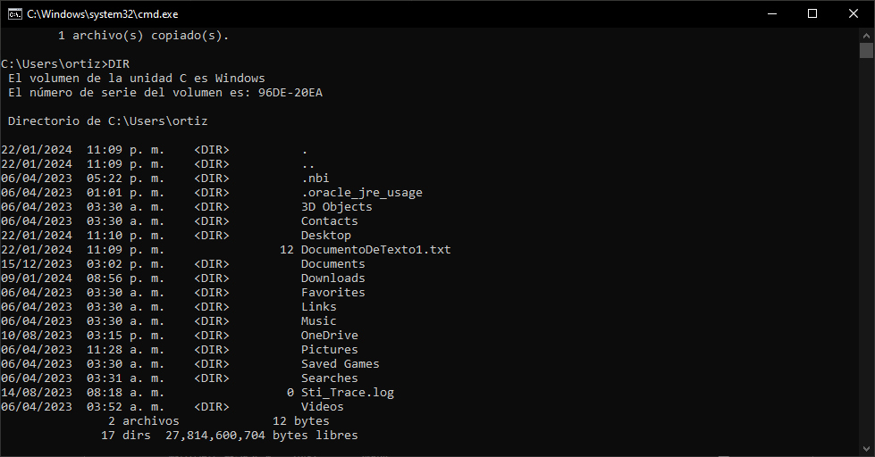 MANEJO DE DIRECTORIO Y DE ARCHIVOS EN CMDLa herramienta de interfaz permite un manejo tanto de directorios y de archivos bastante amplio como los siguientes:
MANEJO DE DIRECTORIO1- Crear un nuevo directorio - mkdir
C:\Users\ortiz>mkdir NombreDirectorio2- Cambiar de directorio - cd
C:\Users\ortiz>cd Nueva\Ruta\3- Mostrar contenido del directorio - DIR
C:\Users\ortiz>DIR4- Eliminar un directorio vacío - rmdir
C:\Users\ortiz>rmdir NombreDirectorio5- Copiar un directorio y su contenido - xcopy
C:\Users\ortiz>Origen\Directorio Destino\Directorio /s /eMANEJO DE ARCHIVO
1- Copiar un archivo - copyC:\Users\ortiz>copy ArchivoOrigen.txt Destino\
2- Mover un archivo - moveC:\Users\ortiz>move ArchivoOrigen.txt Destino\
3- Eliminar un archivo - delC:\Users\ortiz>del NombreDelArchivo.txt
4- Renombrar un archivo - renC:\Users\ortiz>ren NombreAntiguo.txt NombreNuevo.txt
5- Mostrar el contenido de un archivo de texto - typeC:\Users\ortiz>type NombreDelArchivo.txt
Ahora bien, si lo que se quiere es ver el contenido total de los multiples directorios de todo el sistema, se utiliza el comando tree.PRACTICA CON CMD
Se crea la carpeta con nuestro nombre
Nos cercioramos de que se allá creado
Ingresamos a la carpeta
Se crean las primeras 3 carpetas que contendrán nuestro ejercicio
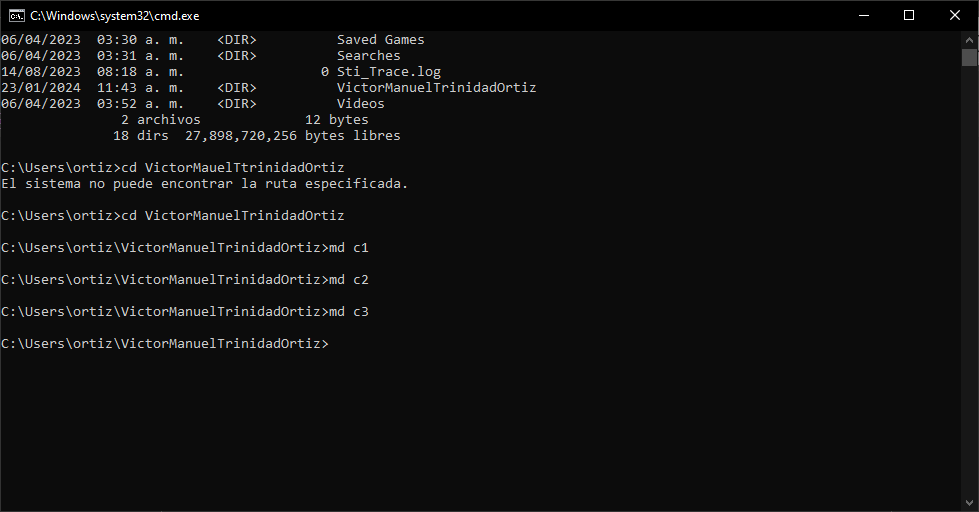Nos aseguramos de que se hallan creado
Se crean los primeros 3 documentos
Y hacemos lo mismo con las demás carpetas
Se hace uso del comando copy en la primera carpeta con uno de los achivos
Se usa el comando type para ver el contenido del archivo
Hacemos uso del comando ren para renombrar el archivo arch3.txt a arch3.1.txt
Copiamos y movemos el archivo arch7.txt de la carpeta c3 a la carpeta c1

Usamos el comando del *.* para eliminar los archivos .txt de cada carpeta desde c1 a c3

Y finalizamos eliminado las carpetas con el nombre
EJERCICIO 1
Indica en cada caso las órdenes utilizadas:
1.- Crea la siguiente estructura de carpetas:


 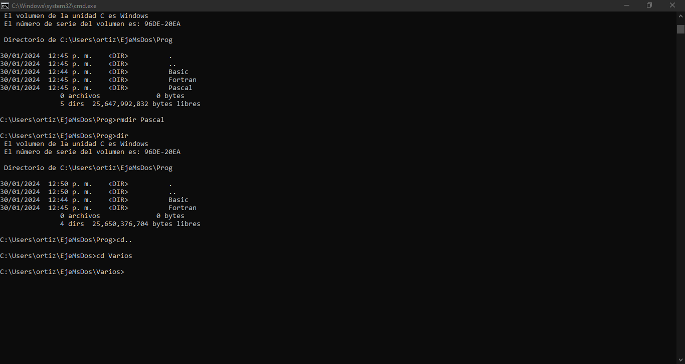
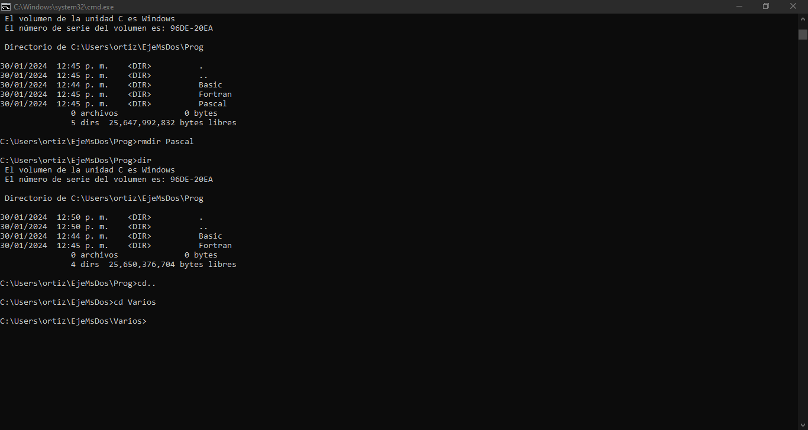
2.- Sitúate en la carpeta TABLAS
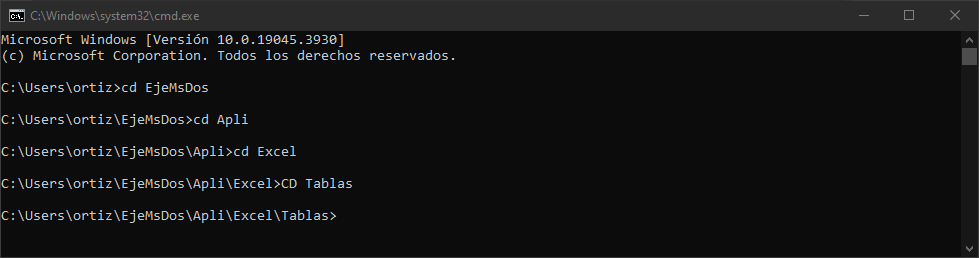3.- Vuelve a la carpeta raíz

4.- Muestra el contenido de la carpeta PROG

5.- Borra la carpeta PASCAL
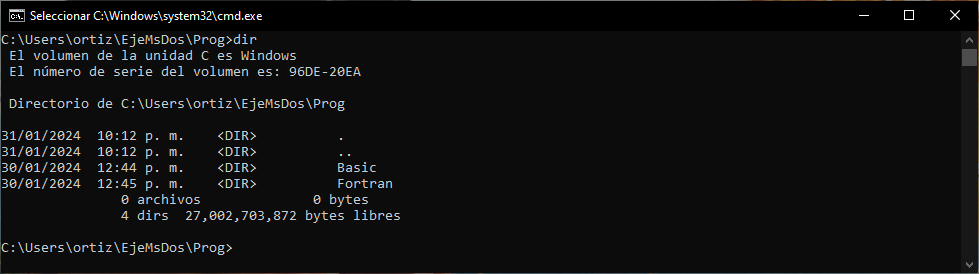6.- Sitúate en la carpeta VARIOS y desde allí crea una nueva carpeta dentro de WORD llamado PRACT

7.- Sitúate en PRACT y desde allí muestra el contenido de la carpeta EXCEL

8.- Desde TABLAS muestra el listado de archivos y carpetas de la carpeta raíz

9.- Sitúate en la carpeta APLI y desde allí crea una subcarpeta llamada AGENDA dentro de VARIOS
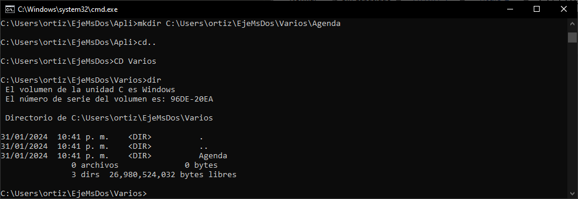10.- Borra la carpeta EXCEL

11.- Desde la carpeta raíz, crea en ella una subcarpeta llamada NUEVO
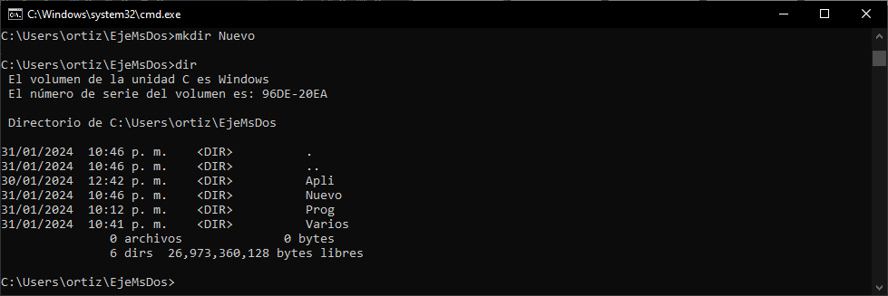12.- Desde PRACT muestra el contenido de WORD
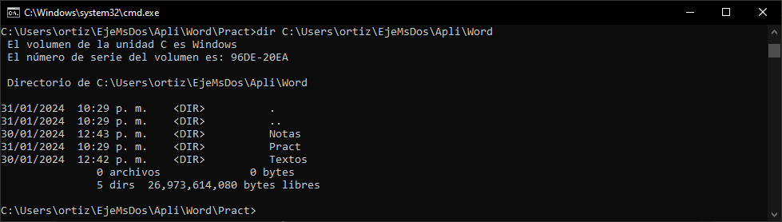EJERCICIO 2
Indica en cada caso las órdenes utilizadas:
1.- Utilizando el editor de textos de MS-DOS, crea un archivo de texto denominado EJER.TXT, con el siguiente contenido, y almacénalo dentro de la carpeta TEXTOS (dentro de la estructura del ejercicio anterior):
“La información dentro de los discos se almacena en forma de archivos. Un archivo o fichero es un conjunto de datos que MS-DOS almacena en un disco y cuyo control interno es realizado por el sistema operativo, aunque desde el punto de vista lógico el control es del usuario”

2.- Copia el archivo EJER.TXT en AGENDA

3.- Borra el archivo almacenado en la carpeta TEXTOS
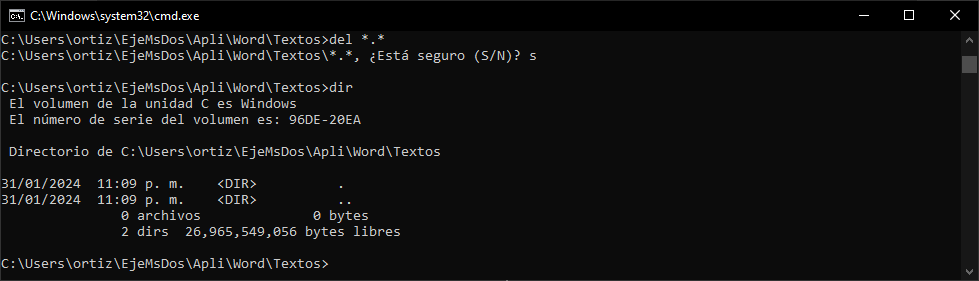4.- Añade el siguiente párrafo al archivo EJER.TXT:
“Cada archivo tiene un nombre y una extensión que los distingue del resto de archivos”
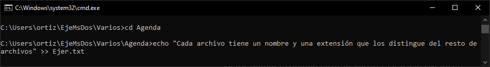5.- Copia el archivo EJER.TXT en la carpeta BASIC
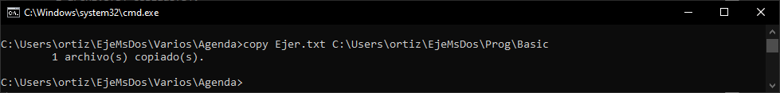6.- Cambia el nombre del archivo almacenado en AGENDA por FICHERO.TXT
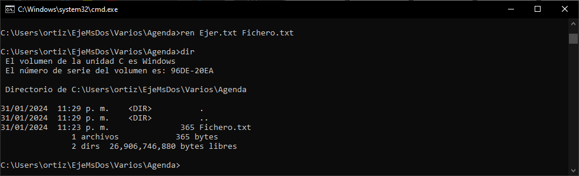7.- Mueve el archivo FICHERO.TXT a la carpeta BASIC
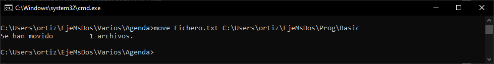8.- Abre el archivo EJER.TXT y borra la primera frase; almacena el nuevo archivo con el nombre NUEVO.TXT dentro de la carpeta BASIC

9.- Copia el archivo NUEVO.TXT en la carpeta NOTAS

10.- ¿Cuántos archivos hay en la carpeta BASIC? ¿Y en NOTAS?
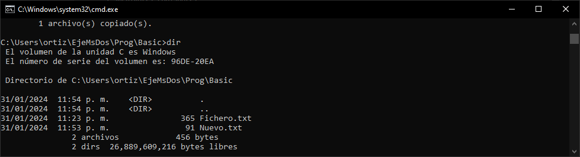 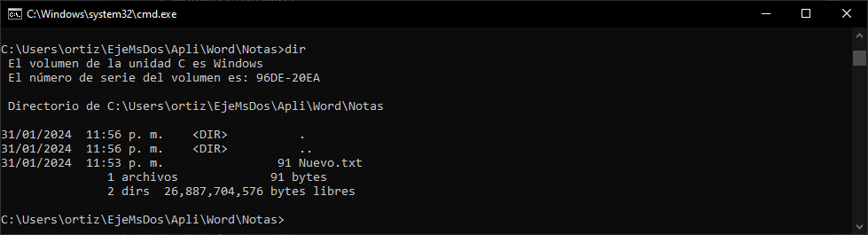Basic: 2 Archivos Notas: 1 Archivo
EJERCICIO 3
Indica en cada caso las órdenes utilizadas:
1.- Borra la carpeta ACCESS y en su lugar crea una nueva carpeta llamada ASTRO
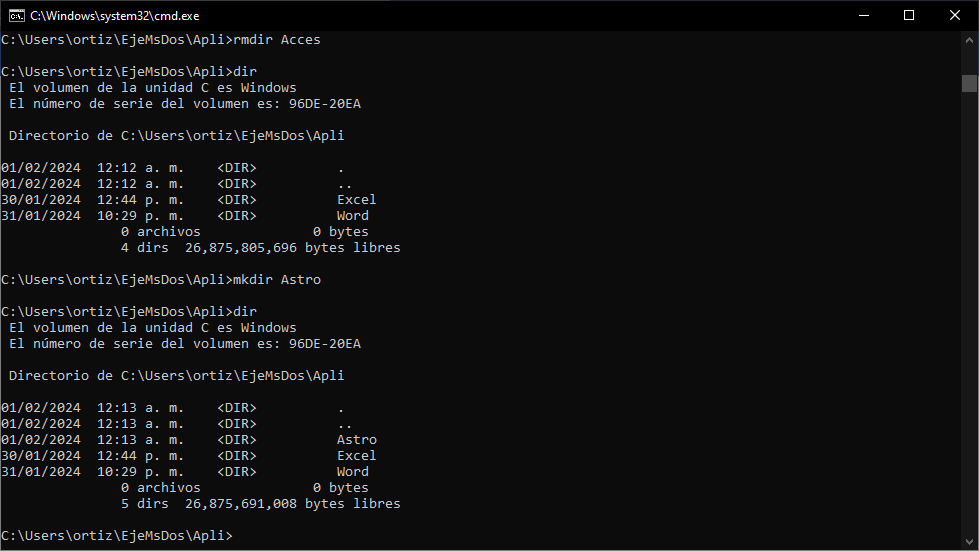2.- Crea la siguiente estructura de subcarpetas dentro de la carpeta ASTRO
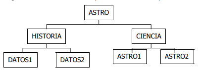 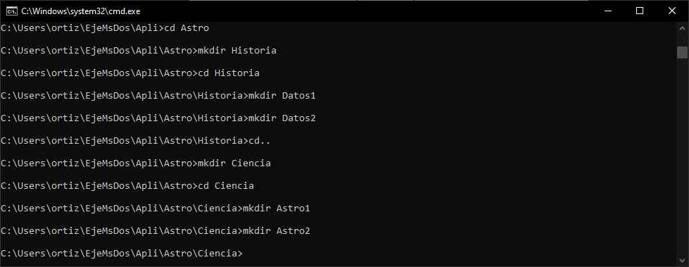3.- Sitúate en la carpeta CIENCIA y desde allí muestra el listado de archivos y subcarpetas de la carpeta HISTORIA

4.- Utilizando el editor de MS-DOS crea el siguiente archivo de texto y guárdalo con el nombre TYCHO.TXT dentro de la carpeta DATOS1
“La importancia de Tycho Brahe (1546-1601) es debida a sus trabajos observacionales, que registraron posiciones notables del Sol, la Luna y los planetas”
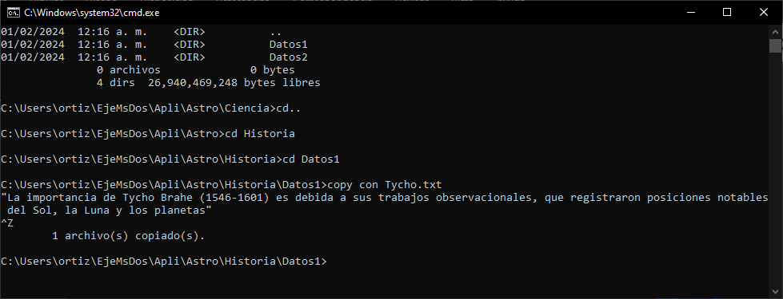5.- Utilizando de nuevo el editor de textos de MS-DOS crea el siguiente archivo de texto, y guárdalo con el nombre KEPLER.TXT dentro de la carpeta DATOS2
“ La información acumulada facilitó a Johannes Kepler (1571-1630) el descubrimiento de las leyes que gobiernan el movimiento de los planetas”
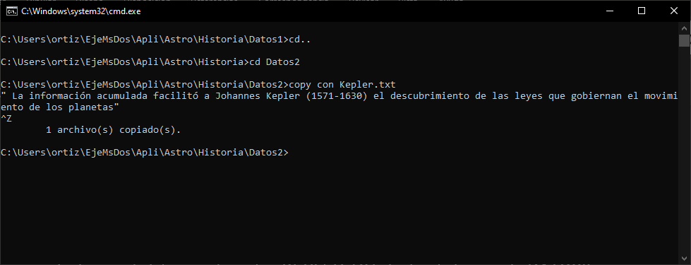6.- Copia los archivos TYCHO.TXT y KEPLER.TXT en la carpeta CIENCIA
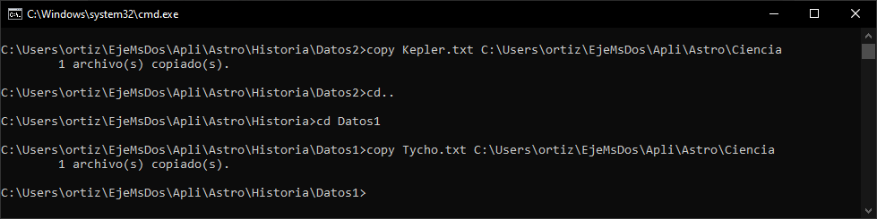7.- Cambia de lugar los archivos almacenados en DATOS1 y DATOS2 de forma que TYCHO.TXT quede guardado dentro DATOS2 y KEPLER.TXT en DATOS1
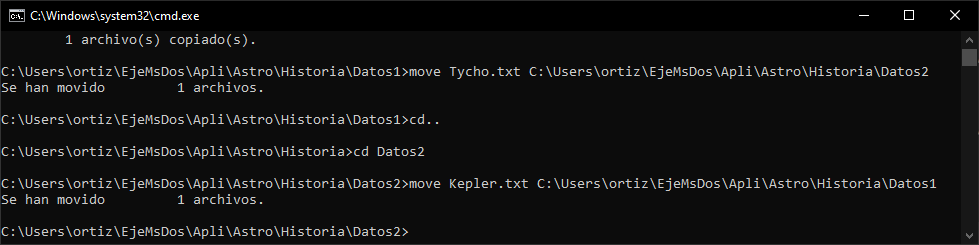8.- Crea un nuevo archivo formado por la unión de los dos anteriores (sin volver a escribir el texto) y guárdalo dentro de la carpeta HISTORIA con el nombre TOTAL.TXT

9.- Abre el archivo KEPLER.TXT almacenado en la carpeta CIENCIA y añade el siguiente texto:
“Kepler aplicó sus teorías a los satélites de Júpiter, descubiertos por Galileo a través de un pequeño telescopio, cuya introducción en la observación astronómica constituye uno de los hitos de la astronomía.”

10.- Cambia el nombre del archivo anterior por el de GALILEO.TXT

EJERCICIO 4
Indica en cada caso las órdenes utilizadas:
1.- Crea en la carpeta raíz de la unidad A: una carpeta denominada TECINFO

2.- Crea dentro de TECINFO el siguiente archivo de texto y llámalo HARD.TXT
“El HARDWARE está constituido por los elementos físicos del ordenador. Consta esencialmente de componentes electrónicos que proporcionan el soporte necesario para la interpretación y ejecución de las operaciones elementales que realiza el ordenador”

3.- Crea dentro de TECINFO el siguiente archivo de texto y llámalo SOFT.TXT
“El SOFTWARE es el conjunto de elementos lógicos necesarios para que el ordenador realice las funciones que se le encomiendan. Está formado por los programas, es decir, por un conjunto ordenado de instrucciones, comprensibles por la máquina, que permiten desarrollar tareas concretas”
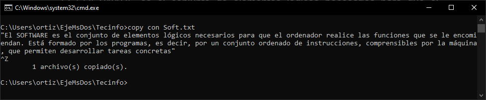4.- Mueve el contenido de TECINFO a la carpeta APLI del disquete A utilizado para realizar los ejercicios anteriores
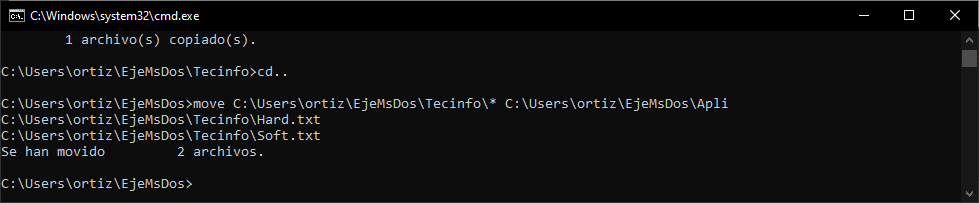5.- Crea un nuevo archivo formado por la unión de HARD.TXT y SOFT.TXT, sin volver a escribir el texto, y guárdalo en la carpeta AGENDA con el nombre ORDER.TXT

6.- Elimina la carpeta TECINFO

7.- Copia a la vez los archivos HARD.TXT y SOFT.TXT en la carpeta VARIOS

8.- Cambia la extensión de los archivos contenidos en AGENDA por .TYP
 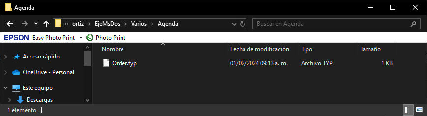
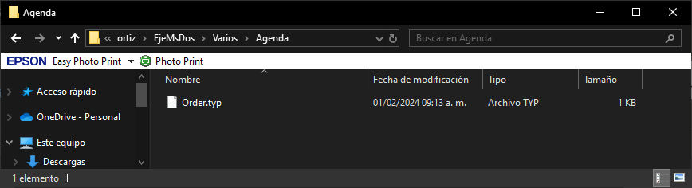
9.- Cambia la primera letra del nombre de todos los archivos del directorio APLI que empiecen por la letra C y tengan extensión DOC de forma que empiecen con la letra S

El archivó con C no existe
10.- Copia los archivos contenidos en la carpeta APLI que tengan extensión DOC en la carpeta AGENDA
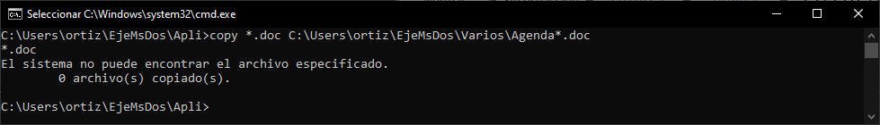PRACTICA 2
UTILERÍAS
ACTIVIDADES
Utilice la bibliografía sugerida para consulta o los motores de búsqueda en internet y conteste correctamente cada una de los siguientes cuestionamientos y realice la actividad indicada.
Que es una utilería: una utilería se refiere a un programa o herramienta de software diseñada para realizar tareas específicas de mantenimiento, diagnóstico, recuperación o optimización del sistema
Para qué sirve: Las utilerías en sistemas operativos sirven para realizar una variedad de funciones, como diagnosticar y solucionar problemas, administrar recursos del sistema, optimizar el rendimiento, realizar copias de seguridad y recuperación de datos, entre otras tareas.
Tipos de utilerías y su uso: Utilerías de diagnóstico: Permiten identificar y solucionar problemas en el sistema, como errores de disco, problemas de red o conflictos de software.
Utilerías de optimización: Ayudan a mejorar el rendimiento del sistema operativo mediante la limpieza de archivos temporales, la desfragmentación del disco duro y la optimización de la memoria RAM.
Utilerías de seguridad: Proporcionan herramientas para proteger el sistema contra virus, malware y otras amenazas de seguridad, así como para realizar copias de seguridad de datos importantes
Utilerías de recuperación: Permiten restaurar el sistema operativo a un estado anterior en caso de fallos graves o pérdida de datos, así como recuperar archivos borrados accidentalmente.
strDescribe tres problemáticas donde es conveniente utilizar una utilería y resuelve el problema: Problema 1: Rendimiento lento del sistema operativo:
Solución: Utilizar utilerías de optimización para limpiar archivos temporales, desfragmentar el disco duro y optimizar la memoria RAM, lo que ayudará a mejorar el rendimiento del sistema
Problema 2: Pérdida de datos debido a un error del sistema:
Solución: Utilizar utilerías de recuperación de datos para intentar recuperar archivos perdidos o dañados debido a un fallo del sistema operativo, como un cierre inesperado o un error de disco.
Problema 3: Sistema infectado por malware o virus:
Solución: Utilizar utilerías de seguridad para escanear y eliminar virus, malware y otras amenazas de seguridad del sistema operativo, así como para fortalecer la protección del sistema mediante la configuración de firewalls y la actualización de software antivirus.
Utilerías
INTRODUCCIÓN.
Las utilerías (también conocidas como utilidades o herramientas) son programas o conjuntos de funciones que proporcionan funcionalidades adicionales para facilitar tareas específicas en el desarrollo de software o en la administración de sistemas. Estas utilerías pueden incluir una amplia variedad de herramientas que van desde simples scripts hasta programas complejos con interfaces gráficas.
INFORMACIÓN.
¿Qué es una Utilería?
Son programas de servicios que sirven de apoyo al procesamiento de los trabajos. En informática, una utilidad es una herramienta que sirve de soporte para la construcción y ejecución de programas, en donde se incluyen las bibliotecas de sistema, middleware, herramientas de desarrollo, etc.
TIPOS DE UTILERÍAS.
- Utilerías de sistema: Se ejecutan bajo el control del sistema operativo. Se utiliza para reparar algunos usados por el sistema, son de uso interno.
- Utilería para archivo: Manejar información de los archivos tales como imprimir, clasificar copias etc.
- Utilería independiente: Realiza funciones que se relacionan con la inicialización de dispositivos de entrada y salida, carga el sistema operativo etc.
Las utilerías de sistema son muy utilizadas por el sistema operativo para realizar tareas fundamentales como la reserva de memoria o la organización de archivos y datos. Las utilerías para archivos son muy útiles para realizar tareas como la edición de archivos de texto, la creación de copias de respaldo o la compresión de archivos para ahorrar espacio en el disco duro. Por último, las utilerías independientes son muy importantes para la iniciación de dispositivos, especialmente en sistemas operativos móviles o en sistemas embebidos. Todas estas utilerías son fundamentales para el correcto funcionamiento de un sistema informático, ya que permiten simplificar y automatizar procesos que de otra manera serían muy laboriosos o complicados. Por eso, es importante conocerlas y saber cómo utilizarlas adecuadamente para sacar el máximo provecho de ellas.
Utilidad de buscadores
Es una herramienta que permite al usuario encontrar un documento que contenga una determinada palabra o frase.
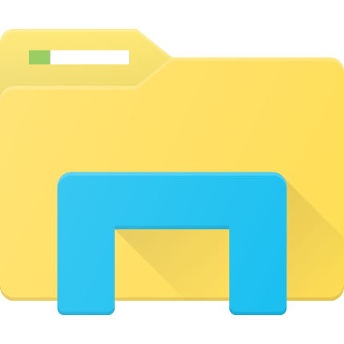Utilidad de compresores y descompresores
Se encarga de "comprimir" la información para que ocupe menos espacio y así facilitar su almacenamiento y su transporte. En la gran mayoría de los casos, esta compresión se realiza sin ningún tipo de pérdida: los datos se pueden "descomprimir" para que vuelvan a quedar exactamente como estaban; en algunos tipos de compresión de audio y de video sí se puede llegar a perder calidad, aunque normalmente no la suficiente como para que se aprecie a simple vista.

7-Zip, una herramienta de código abierto y gratuita que permite comprimir y descomprimir archivos en una variedad de formatos. 7-Zip es compatible con una amplia gama de formatos de archivo, incluidos 7z, ZIP, RAR, GZIP, TAR, entre otros.
Utilidad de desfragmentadores.
Los archivos en el disco duro se almacenan fragmentados en pequeñas porciones de un tamaño fijo (no necesariamente de forma físicamente consecutiva); el desfragmentador de disco almacena los fragmentos en un solo espacio contiguo. De esta manera, cuando se tenga que acceder a ese archivo, todos los fragmentos estarán disponibles físicamente más cerca y en forma consecutiva, aumentando la velocidad de lectura.

Herramienta incluida en la mayoría de los sistemas operativos, aunque se puede adquirir de forma individual. Su función es desfragmentar la unidad de almacenamiento. Básicamente intenta agrupar toda la información almacenada, que se encuentra fragmentada por toda la unidad. De esta manera, los accesos a la información serán más rápidos y eficientes.
Defraggler, desarrollado por Piriform, que está disponible para sistemas operativos Windows. Defraggler es una herramienta que permite desfragmentar discos duros de manera eficiente para mejorar el rendimiento del sistema.
Utilidad de encriptadores.
Es un método de protección de información. Aplicar operaciones matemáticas a un texto para convertirlo en información imposible de leer, en un lenguaje cifrado. Proteger archivos expresando su contenido en un lenguaje cifrado. Los lenguajes cifrados simples consisten, por ejemplo, en la sustitución de letras por números. Es una manera de codificar la información de un archivo o de un correo electrónico de manera que no pueda ser leído en caso de ser interceptado por una tercera persona mientras viaja por la Red. Sólo la persona o personas que tienen el tipo de software de descodificación adecuado pueden descifrar el mensaje.

VeraCrypt y BitLocker son utilidades populares que proporcionan cifrado de disco completo, lo que significa que toda la unidad se cifra, así como la capacidad de crear contenedores de archivos cifrados donde se pueden almacenar archivos sensibles.
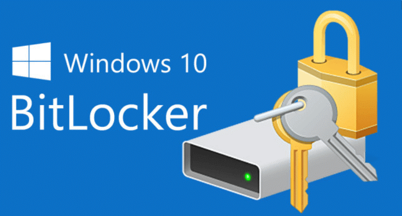Utilidad para renombrar archivos.
Es la acción por la cual un usuario, una aplicación o un programa (en nuestro caso, serán los programas antivirus) eliminan el nombre antiguo de un archivo, asignándole otro.( subir ).
Utilidad para etiquetar archivos.
Fichas de sintaxis del lenguaje HTML, utilizadas para estructurar un documento Web identificando el inicio y el final de una palabra, un título, una frase, un bloque de texto, etc. Cada etiqueta HTML está delimitada por los paréntesis < y >.
Códigos empleados en lenguaje HTML para describir la página, con las que se definen los estilos de texto, imágenes, hiperenlaces, etc.
Utilidad de hoja de cálculo.
Una hoja de cálculo es un programa que permite manipular números dispuestos en forma de tablas. Habitualmente es posible realizar cálculos complejos con fórmulas y funciones y dibujar distintos tipos de gráficas.
PROBLEMÁTICAS DONDE ES CONVENIENTE UTILIZAR UNA UTILERÍA
- Lentitud del sistema debido a archivos temporales y desorden en el disco duro:
Problema: Con el tiempo, los sistemas operativos y las aplicaciones pueden acumular una gran cantidad de archivos temporales y fragmentación en el disco duro, lo que puede hacer que el sistema se vuelva más lento.
Solución: Utiliza una utilería de limpieza de disco, como CCleaner en Windows o BleachBit en Linux, para eliminar archivos temporales, cachés obsoletos y otros elementos innecesarios. Además, utiliza un desfragmentador de disco, como Defraggler en Windows, para reorganizar los archivos en el disco y mejorar la velocidad de acceso a los mismos. - Sistema infectado por malware o virus:
Problema: Los sistemas informáticos pueden ser vulnerables a la infección por malware o virus, lo que puede causar problemas de rendimiento, pérdida de datos o compromiso de la seguridad.
Solución: Utiliza un programa antivirus confiable, como Avast, Malwarebytes o Windows Defender, para escanear y eliminar cualquier software malicioso presente en el sistema. Asegúrate de mantener el programa antivirus actualizado para proteger el sistema contra las últimas amenazas. - Archivos perdidos o eliminados accidentalmente:
Problema: Los archivos importantes pueden perderse o eliminarse accidentalmente debido a errores humanos, fallos del sistema o ataques de malware.
Solución: Utiliza una utilería de recuperación de datos, como Recuva en Windows o TestDisk en Linux, para escanear el disco en busca de archivos perdidos y recuperarlos si es posible. Es importante actuar rápidamente y evitar escribir nuevos datos en el disco para aumentar las posibilidades de éxito en la recuperación.
USO DE UTILERÍA DE COMPRESOR DE ARCHIVOS
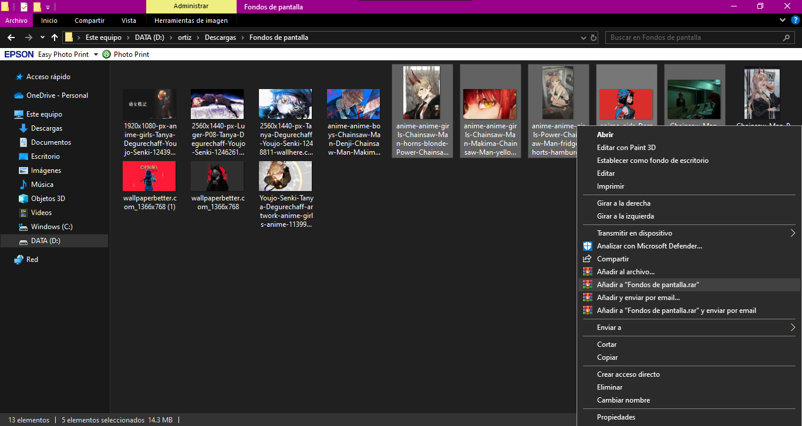

USO DE UTILERÍA DE BUSCADORES
 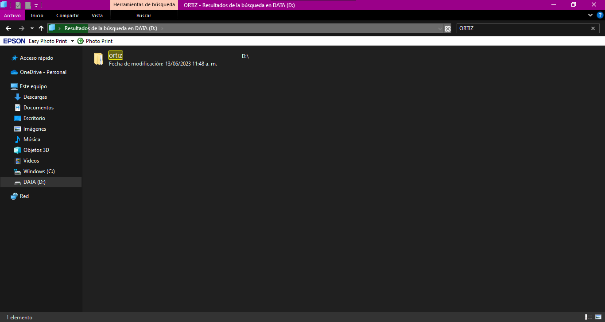
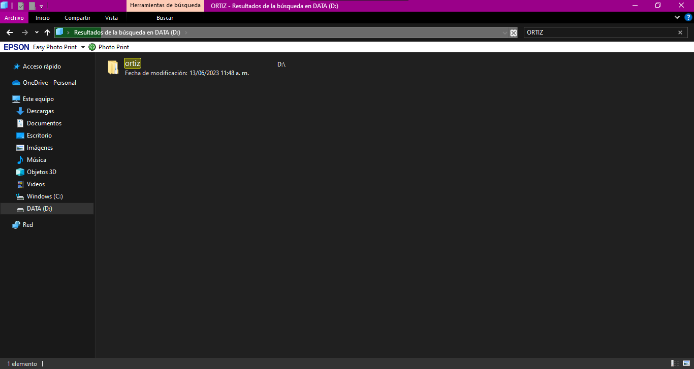
USO DEL DESFRAGMENTADOR
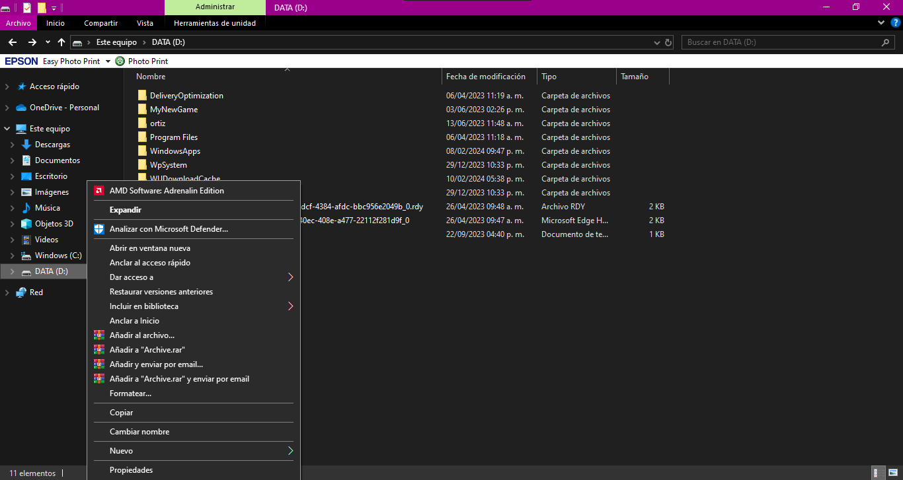 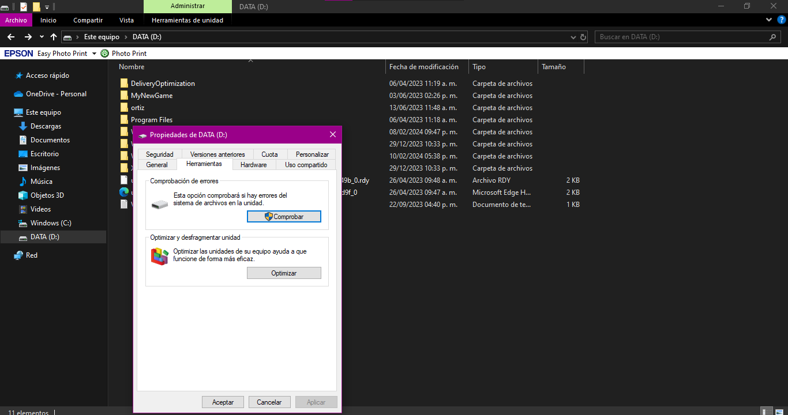
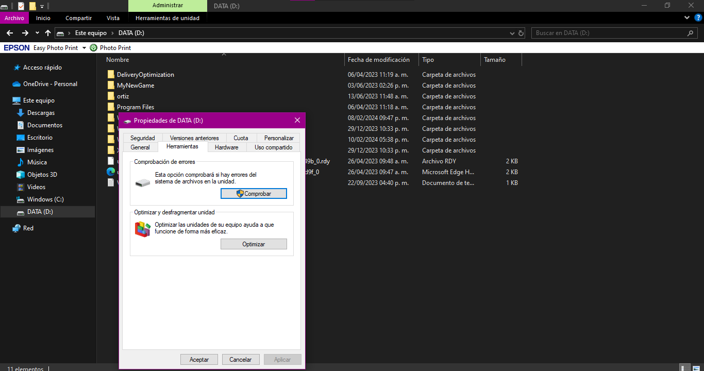

CPU-7
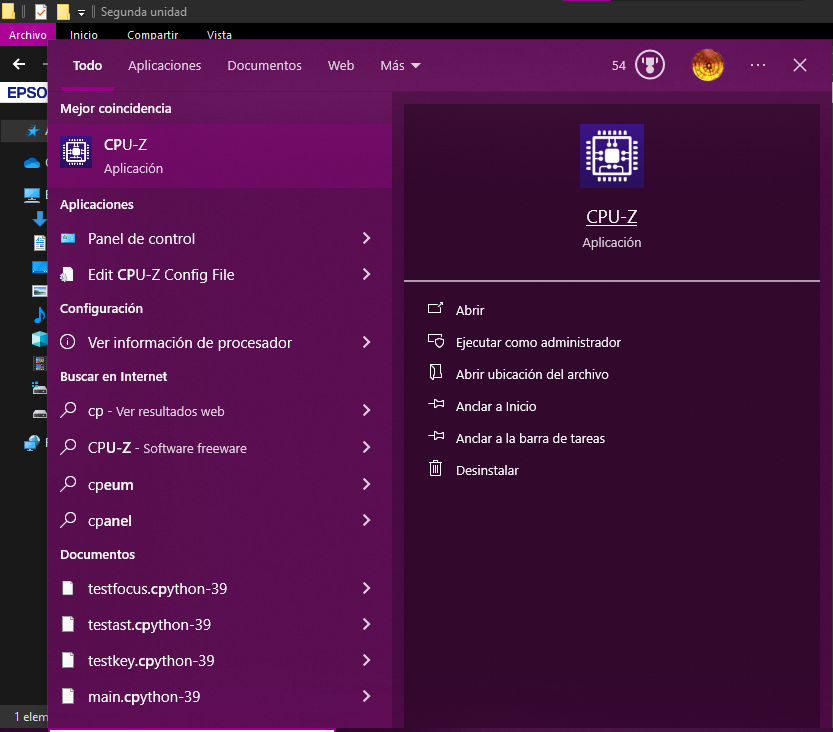
CONCLUSIÓN
Las utilidades en el ámbito de la informática son programas creados con el propósito de ejecutar labores concretas vinculadas al cuidado, la protección, la restauración de datos, la administración de archivos y unidades de almacenamiento, el mejoramiento del desempeño y la gestión de redes en sistemas informáticos. Estas herramientas son esenciales para garantizar el correcto funcionamiento y la seguridad de los sistemas informáticos y de las cuales se tiene una alta gama de las cuales se puede elegir dependiendo de las necesidades que se necesite cubrir.
PRACTICA 3
FORMATEAR, PARTICIONAR, PENDRIVE, ISO, PARTES DE UNA PORTATIL, BIOS
ACTIVIDADES
Utilice la bibliografía sugerida para consulta o los motores de búsqueda en internet y conteste correctamente cada uno de los siguientes cuestionamientos y realice la actividad indicada.
En qué consiste dar formato a un disco
Dar formato a un disco consiste en prepararlo para su uso. Esto implica borrar todos los datos existentes en el disco y crear un nuevo sistema de archivos. El sistema de archivos es una estructura que organiza los datos en el disco y permite que el sistema operativo los acceda y los utilice.
Qué es formatear
Formatear es el proceso de preparar un disco duro para su uso. Este proceso borra todos los datos existentes en el disco y crea un nuevo sistema de archivos.
Qué es una partición y para qué sirve
Una partición es una división lógica de un disco duro. Cada partición puede contener un sistema operativo, archivos o aplicaciones diferentes.
Las particiones sirven para organizar el espacio de almacenamiento de un disco duro. También se pueden utilizar para instalar varios sistemas operativos en un mismo disco duro.
Tipos de Particiones
Hay dos tipos principales de particiones:
- Particiones primarias: Las particiones primarias se pueden utilizar para instalar un sistema operativo.
- Particiones lógicas: Las particiones lógicas se pueden utilizar para almacenar archivos o aplicaciones.
Además de los tipos principales, también existen otros tipos de particiones, como las siguientes:
- Particiones extendidas: Las particiones extendidas pueden contener otras particiones lógicas.
- Particiones de recuperación: Las particiones de recuperación se utilizan para restaurar el sistema operativo a su estado original.
Qué es el Fan Cooler
El Fan Cooler es un componente de las computadoras que se encarga de enfriar el procesador. El Fan Cooler consiste en un ventilador que se coloca sobre el procesador y que expulsa el calor generado por este.
Qué es la BIOS
La BIOS es el sistema básico de entrada y salida de la computadora. Es un programa que se encuentra almacenado en una memoria ROM y que se ejecuta antes de que se inicie el sistema operativo.
La BIOS se encarga de realizar las siguientes tareas:
- Inicializar los componentes de la computadora.
- Cargar el sistema operativo.
- Configurar las opciones del sistema.
Cómo se accesa a la BIOS de tu portátil
En la laptop modelo hp 255 g8 notebook pc se ingresa a la BIOS (cuando el equipo ya esté apagado) con las teclas de encendido/apagado y al mismo tiempo que se presiona con F10.
Qué es un PENDRIVE y cómo se genera
Un PENDRIVE es un dispositivo de almacenamiento de datos que se conecta a la computadora a través de un puerto USB. Los PENDRIVE suelen utilizarse para almacenar archivos, como documentos, música, imágenes o vídeos.
Para generar un PENDRIVE, puedes utilizar un programa de creación de imágenes ISO. Un programa de creación de imágenes ISO te permite crear una copia de un archivo ISO en un PENDRIVE.
Qué es Heidoc.net y para qué sirve
Heidoc.net es un sitio web que ofrece una variedad de herramientas para la creación de imágenes ISO. Entre estas herramientas se encuentran las siguientes:
- Un creador de imágenes ISO: Esta herramienta te permite crear una imagen ISO de un archivo o directorio.
- Un extractor de imágenes ISO: Esta herramienta te permite extraer los archivos de una imagen ISO.
- Un verificador de imágenes ISO: Esta herramienta te permite verificar la integridad de una imagen ISO.
Heidoc.net es una herramienta útil para crear y gestionar imágenes ISO.
Realiza el proceso secuencia de pasos de una partición
En Windows:
Abre la herramienta de administración de discos:
Presiona la tecla de Windows + X y selecciona "Administración de discos" desde el menú.
Selecciona el disco que deseas particionar:
En la ventana de Administración de discos, encuentra el disco que deseas particionar en la parte inferior. Deberías ver una representación gráfica de los discos conectados a tu sistema.
Selecciona el espacio no asignado:
Si el disco no tiene particiones, verás todo el espacio como "No asignado". Haz clic derecho sobre él y selecciona "Nuevo volumen simple".
Asistente para nuevo volumen simple:
Se abrirá un asistente que te guiará a través del proceso. Sigue las instrucciones para establecer el tamaño de la partición, asignar una letra de unidad, y formatear el volumen.
Completa el asistente:
Una vez que hayas establecido todas las opciones, haz clic en "Finalizar". La partición se creará y estará lista para usar.
En Linux (usando el terminal y el comando fdisk como ejemplo):
Abre una terminal:
Puedes usar la combinación de teclas Ctrl + Alt + T en la mayoría de las distribuciones de Linux.
Ejecuta el comando fdisk:
Puedes utilizar el comando fdisk seguido del nombre del disco que deseas particionar (por ejemplo, /dev/sda). Ejemplo: sudo fdisk /dev/sda.
Crea una nueva partición:
Dentro de fdisk, presiona n para crear una nueva partición.
Elige el tipo de partición:
Si es una partición primaria, presiona p. Luego, selecciona el número de partición (por ejemplo, 1).
Establece el tamaño de la partición:
Sigue las instrucciones para establecer el tamaño de la partición.
Guarda los cambios:
Después de establecer todos los parámetros, guarda los cambios presionando w.
Formatea la partición:
Cuestionarios vistos en clase
-
¿Existen tarjetas madre cuyo procesador puede ser retirado, ya que se encuentra en un soquete y también existen otros modelos que poseen el procesador soldado a la placa y no puede ser retirado?
R= Verdadero.
-
¿La tarjeta Wi-Fi permite conectar el internet de forma alámbrica?
R= Falso.
-
La batería de un equipo portátil, ¿Puede ser extraída sin necesidad de abrir el equipo?
R= Falso, mi Laptop hp paviion 15 cw-1000 necesita abrirse para extraer la batería.
-
¿Los puertos USB, HDMI, puerto RJ-45 y lector de tarjetas SD y microSD están integrados a la tarjeta madre?
R= Sí, los puertos USB, HDMI, puerto RJ-45 y los lectores de tarjetas SD y microSD están integrados a la tarjeta madre.
-
¿Cuándo realizamos una limpieza interna a un equipo portátil estamos hablando de qué tipo de mantenimiento?
R= Cuando realizamos una limpieza interna a un equipo portátil, estamos hablando de mantenimiento preventivo.
-
¿Cuándo recibimos un equipo portátil en donde el sistema operativo no inicia y muestra una pantalla azul, necesita un mantenimiento de qué tipo?
R= Cuando recibimos un equipo portátil en donde el sistema operativo no inicia y muestra una pantalla azul, necesita un mantenimiento de tipo correctivo.
-
Un equipo portátil que funciona bien pero que posee más de un año de uso. ¿Qué tipo de mantenimiento recomendarías aplicar?
R= Recomendaría aplicar un mantenimiento preventivo al equipo portátil que funciona bien pero que tiene más de un año de uso.
-
¿Cuándo limpiamos el sistema operativo y lo optimizamos, estamos hablando de qué tipo de mantenimiento?
R= Cuando limpiamos el sistema operativo y lo optimizamos, estamos hablando de mantenimiento de software.
-
¿Qué es un fan cooler?
R= Un fan cooler es un dispositivo de enfriamiento que se utiliza para disipar el calor generado por el hardware, como el procesador, en un equipo.
-
¿El conector del fan cooler va acoplado en el puerto USB?
R= No, el conector del fan cooler no va acoplado en el puerto USB.
-
¿Todos los tornillos de un equipo portátil son del mismo tamaño?
R= No, los tornillos de un equipo portátil pueden variar en tamaño dependiendo de la ubicación y función.
-
¿La pasta térmica permite que el procesador esté caliente para que pueda funcionar mucho más rápido?
R= No, la pasta térmica permite una transferencia eficiente de calor entre el procesador y el disipador de calor para evitar el sobrecalentamiento.
-
¿La pasta térmica debe colocarse sobre qué pieza del hardware?
R= La pasta térmica se debe colocar sobre el procesador.
-
¿En qué condiciones es recomendable utilizar pasta térmica de buena calidad?
R= Es recomendable utilizar pasta térmica de buena calidad cuando se desea una disipación eficiente del calor y una mejor conductividad térmica.
-
¿Qué se recomienda hacer antes de desarmar un teclado y darle mantenimiento?
R= Antes de desarmar un teclado y darle mantenimiento, se recomienda desconectarlo y apagar el equipo para evitar daños.
-
¿Cada cuánto tiempo debe desarmarse un teclado y realizarle mantenimiento?
R= No es necesario desarmar un teclado a menos que presente problemas específicos; sin embargo, la limpieza periódica puede ser recomendable.
-
¿El BIOS comprueba que los dispositivos conectados al equipo portátil estén correctamente conectados?
R= Sí, el BIOS realiza comprobaciones de hardware durante el proceso de inicio para asegurar que estén correctamente conectados.
-
¿El tiempo de inicio de Windows en equipos que poseen discos duros HDD es menor que el de los discos de estado sólido?
R= No, el tiempo de inicio de Windows en equipos con discos duros HDD suele ser mayor que en equipos con discos de estado sólido.
-
¿Dónde se encuentra la configuración de inicio del sistema operativo?
R= La configuración de inicio del sistema operativo se encuentra en el BIOS o UEFI.
-
¿Qué significa BIOS?
R= BIOS significa Basic Input/Output System (Sistema Básico de Entrada/Salida).
-
¿Qué significa memoria ROM?
R= La memoria ROM (Read-Only Memory) es un tipo de memoria no volátil que conserva datos incluso cuando se apaga el equipo y solo puede ser leída.
-
¿Cómo podemos ingresar al BIOS?
R= Podemos ingresar al BIOS durante el arranque del sistema presionando una tecla específica, como F2, F10, o Suprimir, dependiendo del fabricante.
-
¿Cómo podemos ingresar a la BIOS desde Windows?
R= Desde Windows, podemos reiniciar el equipo y acceder al BIOS presionando la tecla específica durante el proceso de arranque.
-
¿Una vez que hayas ingresado al BIOS, qué tecla o combinación de teclas generalmente se utiliza para guardar los cambios y salir de la BIOS?
R= Una vez dentro del BIOS, generalmente se utiliza la tecla F10 o la combinación de teclas Control + S para guardar los cambios y salir.
-
¿Cuándo la opción FastBoot está activa, es más fácil o más difícil ingresar al BIOS presionando la tecla correspondiente?
R= Cuando la opción FastBoot está activa, puede ser más difícil ingresar al BIOS ya que el arranque es más rápido y hay menos tiempo para presionar la tecla correspondiente.
-
¿El sistema operativo es el lenguaje que utilizamos para poder comunicarnos con una computadora o laptop?
R= Sí, el sistema operativo es el software que gestiona los recursos de hardware y permite la interacción entre el usuario y la computadora.
-
¿Cuáles son los sistemas operativos de Microsoft?
R= Windows 11, Windows 10, Windows 8.1, Windows 7, y versiones anteriores como Windows XP.
-
¿La arquitectura de 64 bits también se conoce como:
R= La arquitectura de 64 bits también se conoce como x64.
-
Si posees un equipo portátil con 8 gigas de memoria RAM. ¿Qué sistema operativo seria recomendado instalar, para poder aprovechar toda la capacidad de la memoria?
R= Para aprovechar toda la capacidad de la memoria RAM en un equipo portátil con 8 gigas, sería recomendable instalar un sistema operativo de 64 bits.
-
¿Cómo se descarga una imagen ISO?
R= Una imagen ISO se descarga generalmente desde el sitio web oficial del software o desde un repositorio confiable.
-
¿Qué es y cómo se crean las particiones?
R= Las particiones son divisiones lógicas en un disco duro que permiten organizar y gestionar el espacio de almacenamiento. Se crean utilizando software de gestión de discos como Disk Management en Windows. Dividir el disco en varios discos virtuales. Puede haber particiones físicas de los recursos del sistema host.
Tipos de particiones:
- Primarias: Partición principal del disco duro, hasta 4.
- Extendidas: Se usa para crear más de 4 particiones en un disco duro.
- Lógicas: Particiones dentro de partición extendida.
- Especiales: Se usa para fines específicos como memoria virtual o la hibernación.
-
¿Cómo formatear una unidad C:\?
R= Para formatear la unidad C:\, generalmente se realiza durante la reinstalación del sistema operativo o utilizando herramientas de formateo como Disk Management en Windows o Disk Utility.
-
¿Cómo se crea una memoria booteable y cuáles son los pasos?
R= Para crear una memoria booteable, primero necesitas una herramienta como Rufus o Etcher. Luego, selecciona la imagen ISO del sistema operativo que deseas instalar, elige la unidad USB como destino y sigue las instrucciones para crear la memoria booteable.
-
Actualmente los fabricantes más importantes de procesadores:
R= Intel, AMD, MacOS, SnapDragon.
-
El fan cooler es el dispositivo que se encarga de ventilar el procesador, se recomienda hacer mantenimiento (retirar polvo y residuos) una vez al año como mínimo, ¿verdadero o falso?
R= Verdadero.
-
¿De qué forma se debe de limpiar la memoria RAM?
R= Primero limpiar con aire comprimido para después limpiar con alcohol isopropílico.
-
La forma correcta de conectar FLEX en un dispositivo portátil es:
A) Levantando la pestaña
B) Colocando a presión
C) Colocando cinta adhesiva
R= A
-
Los cables que van conectados a la tarjeta Wi-Fi se colocan:
A) Se enroscan
B) A presión
C) Con tornillo
D) Con cinta adhesiva
R= B
-
Cuando una pantalla parpadea o cambia de color, ¿cuál puede ser la falla?
A) Falla del controlador del driver
B) Conector del flex de pantalla flojo o dañado
C) Pantalla dañada
R= B
-
¿Para reemplazar una pantalla, es necesario retirar la batería?
R= Sí.
-
¿Antes de remplazar la pantalla, debemos asegurarnos que los drivers estén instalados?
R= Verdadero.
-
¿Qué tipo de procesador posee su equipo portátil?
R= HP pavilion 15 cw-1000 AMD Ryzen 3.
-
¿Cuánta memoria RAM integrada a la tarjeta madre posee su equipo portátil?
R= HP pavilion 15 cw-1000 AMD Ryzen 3. 12GB DDR4 3200Mhz.
-
¿Qué es necesario comprar para poder instalar una unidad HDD o SSD en tu modelo de portátil?
A) Caddy
B) Flex para unidad SATA
C) Adaptador USB
D) Un fan cooler para la nueva unidad
R= Aparte de la unidad, la base donde se coloca.
-
Si no colocáramos la memoria RAM en el slot del equipo portátil, HP pavilion 15 cw-1000 AMD Ryzen 3., ¿Qué sucedería?
A) No inicia
B) Inicia sin problema con la memoria RAM (4GB) que tiene integrado.
C) El equipo inicia, pero Windows no.
R= El equipo inicia, pero Windows no.
-
¿Cuánta memoria RAM y cuántos módulos posee tu laptop?
R= HP pavilion 15 cw-1000 AMD Ryzen 3., 12GB DDR4 con 2 módulos uno de 8 y otro de 4 3200Mhz.
PRACTICA 4
MANTENIMIENTO FISICO Y LOGICO
ACTIVIDADES:
Utilice la bibliografía sugerida para consulta o los motores de búsqueda en internet y conteste correctamente cada una de los siguientes cuestionamientos y realice la actividad indicada.
Define mantenimiento de equipo de cómputo
El mantenimiento de equipo de cómputo se refiere a las acciones realizadas para conservar en buen estado el hardware y el software de una computadora, asegurando su correcto funcionamiento y prolongando su vida útil.
Tipos de mantenimiento
- Mantenimiento preventivo: Conjunto de acciones periódicas que se realizan para prevenir fallos y problemas en el equipo.
- Mantenimiento correctivo: Acciones realizadas para reparar un equipo que ha fallado o no funciona correctamente.
- Mantenimiento predictivo: Uso de técnicas de diagnóstico para predecir fallos futuros y planificar su reparación.
Herramientas necesarias, lista de materiales para dar mantenimiento
- Destornilladores (Phillips y planos)
- Aire comprimido
- Brochas antiestáticas
- Alcohol isopropílico
- Panos de microfibra
- Kit de limpieza para pantallas
- Herramientas de diagnóstico de software
- Pasta térmica
- Guantes antiestáticos
Pasos y procedimiento para realizar un mantenimiento lógico preventivo
- Realizar copias de seguridad de los datos importantes.
- Actualizar el sistema operativo y todos los programas instalados.
- Ejecutar un software antivirus y anti-malware para escanear y eliminar posibles amenazas.
- Eliminar archivos temporales y programas no utilizados.
- Desfragmentar el disco duro (si aplica).
- Optimizar el inicio del sistema deshabilitando programas innecesarios.
- Revisar y ajustar las configuraciones de seguridad del sistema.
Pasos y procedimiento para realizar un mantenimiento físico preventivo
- Apagar y desconectar el equipo de la corriente eléctrica.
- Retirar la tapa del gabinete para acceder a los componentes internos.
- Utilizar aire comprimido para limpiar el polvo acumulado en los componentes y ventiladores.
- Limpiar las superficies con paños de microfibra y alcohol isopropílico.
- Revisar y asegurar todas las conexiones y cables internos.
- Aplicar pasta térmica nueva en el procesador si es necesario.
- Volver a montar la tapa del gabinete y conectar el equipo a la corriente eléctrica.
- Encender el equipo y verificar que todos los componentes funcionen correctamente.
Describe las ventajas de dar mantenimiento a tu equipo periódicamente
Dar mantenimiento periódico a tu equipo tiene varias ventajas, entre ellas:
- Prolonga la vida útil del equipo.
- Previene fallos y problemas graves.
- Mejora el rendimiento y la velocidad del sistema.
- Reduce el riesgo de pérdida de datos.
- Asegura un funcionamiento seguro y eficiente.
- Permite detectar y solucionar problemas antes de que se conviertan en críticos.
MANTENIMIENTO
INTRODUCCIÓN.
El mantenimiento se refiere a los procesos llevados a cabo para preservar, reparar o mejorar el funcionamiento de un objeto, sistema o infraestructura. A continuación, se describen los tipos de mantenimiento y lo necesario para realizarlos.
¿QUÉ ES EL MANTENIMIENTO?
El mantenimiento, en otras palabras, consiste en la realización de una serie de actividades, como reparaciones y actualizaciones, que permiten que el paso del tiempo no afecte al rendimiento de un bien de capital, propiedad de la empresa. La realización de un correcto mantenimiento es necesario en todas las actividades económicas, además de que exige un serie de gastos por parte de la organización. El mantenimiento es necesario para evitar fallos en el proceso productivo que generen mayores costes.
TIPOS DE MANTENIMIENTO
1-Mantenimiento Correctivo:
El mantenimiento correctivo consiste en una serie de acciones dirigidas a reparar daños o fallos detectados en la maquinaria o los equipos que se usan en una empresa. Ante cualquier necesidad de reemplazo de piezas o de algún tipo de reparación, se aplican unas tareas técnicas para solventar esos problemas. Esas reparaciones se aplican en el día a día, conforme se van dando las averías a lo largo del proceso productivo. Por tanto, su meta es restaurar la fiabilidad del sistema sin perder la esencia original.
¿Cómo se lleva a cabo?
1.Detección del problema: Identificar el daño o fallo en el equipo.
2.Diagnóstico: Determinar el origen del fallo mediante análisis y pruebas.
3.Planificación de la intervención: Organizar los recursos necesarios para comenzar la reparación.
4.Intervención y reparación: Realizar las acciones necesarias para corregir el problema y restaurar el equipo.
5.Pruebas y verificación: Verificar que el equipo ha sido reparado correctamente y que funciona con normalidad.
6.Registro y seguimiento: Documentar todas las actividades realizadas durante el mantenimiento correctivo para análisis y mejora continua.
7. Análisis de Causa Raíz (Opcional): Realizar un análisis de causa raíz opcional después de una falla puede proporcionar información valiosa para prevenir problemas similares en el futuro.
2- Mantenimiento Preventivo:
El mantenimiento preventivo es un enfoque estratégico centrado en tareas periódicas de mantenimiento para evitar averías en los equipos y prolongar la vida útil de los activos. Este método proactivo implica inspecciones, ajustes y reparaciones programadas para garantizar un rendimiento y una fiabilidad óptimos de la maquinaria, minimiza el tiempo de inactividad imprevisto al anticipar y abordar los posibles problemas antes de que se agraven. Maximiza la eficiencia, sirviendo como práctica para los profesionales del mantenimiento que buscan mantener unos estándares operativos consistentes.
¿Cómo se lleva a cabo?
1. Realiza el diagnóstico de los equipos: Consolidar la totalidad de los datos obtenidos de las inspecciones, las condiciones de las herramientas, los registros de mantenimiento correctivo y la información relativa a la vida útil de los equipos.
2. Examina el material recopilado: Es crucial comprender las razones detrás de estos eventos, permitiendo la identificación de estándares en el uso, así como prácticas relacionadas con la conservación, almacenamiento e higienización de la maquinaria.
3. Elabora un plan de mantenimiento preventivo: En esta etapa se debe revisar y prever las tareas que requieren el uso de cada herramienta, para identificar puntos de mejora y optimización. Dicho de otro modo, el objetivo de conservarlas durante el mayor tiempo posible.
4. Registra todas las acciones: Esto permite evaluar si las acciones implementadas han efectivamente reducido las fallas, los costos y la necesidad de reparaciones.
4- Mantenimiento Proactivo:
Es una estrategia de mantenimiento cuyo objetivo es determinar la causa raíz de los fallos de los equipos para corregirlos antes de que causen más problemas y provoquen averías en las máquinas.
¿Cómo se lleva a cabo?
1. Enfoque preventivo: Se implementan medidas preventivas y se siguen protocolos de mantenimiento planificados.
2. Planificación sistemática: Esto implica definir los intervalos de mantenimiento, asignar los recursos necesarios y llevar a cabo las actividades de acuerdo con un cronograma preestablecido.
3. Monitoreo continuo: Esto permite obtener información en tiempo real sobre el rendimiento de los equipos y detectar posibles desviaciones o anomalías.
4. Optimización continua: Se busca mejorar constantemente los procesos de mantenimiento y aumentar la eficiencia operativa.
5- Mantenimiento Detectivo:
Se centra en la detección temprana de problemas y la corrección antes de que se agraven.
¿Cómo se lleva a cabo?
Como ya sugiere el nombre, las pruebas de detección de fallas tienen como objetivo buscar y averiguar si algo interno, dentro del equipo, no funciona en absoluto. Es decir, si una máquina en particular no presenta ningún defecto grave, pero tiene un pequeño retraso en el rendimiento. Por tanto, la empresa debe instalar equipos o dispositivos que actúen de acuerdo a vibraciones, temperatura, corriente, presión, entre otros.
Algunos ejemplos:
-Controlador lógico programable;
-Pruebas de detectores de humo;
-Prueba de dispositivo de seguridad;
-Panel de sinalizacion de alarmas;
-Prueba de detectores de gas;
-Computador supervisório;
-Prueba de caída de presión en compresores.
CONCLUSIONES SOBRE LOS VIDEOS DE MANTENIMIENTO
1-Preventivo y correctivo.
En el video se explican mantenimientos dirigidos a computadoras; preventivo y correctivo. Siendo que en primero se centra en el software y el hardware; dentro del software plantea acciones periódicas a realizar como lo serian; las cuentas del usuario, los discos de almacenamiento, el sistema operativo y el antivirus. En cambio el mantenimiento dedicado al hardware en la limpieza y la conexión de los periféricos del pc. Sobre el mantenimiento correctivo este se lleva a cabo después de que alguno de los compontes presente una falla que requiera mantenimiento o en su defecto el cambio de algún componente que comprometa a otros.
2-Predictivo y proactivo
En esta ocasión lo que se nos muestras son pasos a seguir para un mantenimiento predictivo dedicado al software del pc, como seria el checar que las licencias de el sistema operativo, así como el Office se encuentren activas. La desinstalación de programas que ya no se estén ocupando o que no sean usadas con la frecuencia que se debería y que solo ocupan espacio en el disco duro así como también a eliminar cualquier archivo de forma permanente que se encuentre en la papelera de reciclaje. Así también a deshabilitar programas que estén activos en segundo plano y que no son estrictamente necesarios y que solo ralentizan el dispositivo. Los mantenimientos predictivo y proactivo están ligados el uno con el otro, ya que ambos tienen el mismo fin que seria el identificar y corregir de las causas que es mas probable que lleguen a originar los fallos en los equipos o maquinaria.
3-Detectivo
En el video se explica la importancia de este tipo de mantenimiento ya que puede ayudar a el equipo si se detectan las alarmas a tiempo, algunos de estos paso son; la revisión de patrones de acceso: que puede definirse como la hora, fecha, el usuario o la ip de la o las personas que tienen acceso al dispositivo y en caso de no cuadrar con alguno saber actuar de la manera adecuada. En general este tipo de mantenimiento se centra más en detectar patrones inusuales en alguno de los dispositivos usados, como mensajes no enviados, archivos que no se recuera haber descargado o eliminado, así como también un funcionamiento inusual de nuestro sistema, como sobre calentamiento con tareas sencillas.
CONCLUSION
En conclusión, el mantenimiento en los dispositivos de uso personal así como en el uso laboral puede ser tanto beneficioso para una empresa así como a nuestro bolcillo, ya que si se tiene un manetnimiento constante se puede llegar a evitar un gran gasto en un futuro.
PRACTICA 5
SISTEMAS OPERATIVOS
ACTIVIDADES:
Investigar y comparar los diferentes sistemas operativos (WINDOWS, LINUX, Mac OS X, Móviles). Utilice la bibliografía sugerida para consulta o los motores de búsqueda en internet y conteste correctamente cada una de los siguientes cuestionamientos y realice la actividad indicada.
Sistema operativo
Definición y descripción de los sistemas operativos a comparar.
Características generales
- Windows: Sistema operativo comercial desarrollado por Microsoft, conocido por su interfaz gráfica de usuario (GUI) y amplia compatibilidad de software.
- Linux: Sistema operativo de código abierto, conocido por su flexibilidad y seguridad, disponible en múltiples distribuciones como Ubuntu, Fedora, y Debian.
- Mac OS X: Sistema operativo desarrollado por Apple para sus computadoras Mac, conocido por su estabilidad, diseño elegante y ecosistema integrado.
- Moviles: Sistemas operativos diseñados para dispositivos móviles como Android (desarrollado por Google) e iOS (desarrollado por Apple), enfocados en la movilidad y aplicaciones táctiles.
Sistema de archivo que utiliza cada sistema
| Sistema Operativo | Sistema de Archivos |
|---|---|
| Windows | NTFS, FAT32, exFAT |
| Linux | ext4, Btrfs, XFS |
| Mac OS X | APFS, HFS+ |
| Android | ext4, F2FS |
| iOS | APFS |
Nivel de seguridad
- Windows: Buen nivel de seguridad con software antivirus y actualizaciones regulares, aunque es un objetivo común para malware debido a su popularidad.
- Linux: Alto nivel de seguridad debido a su arquitectura y gestión de permisos; menos objetivo de malware.
- Mac OS X: Alto nivel de seguridad con menos incidencia de malware; incluye características como Gatekeeper y XProtect.
- Moviles:
- Android: Variable según el fabricante y las actualizaciones de seguridad; uso de Google Play Protect.
- iOS: Alto nivel de seguridad con actualizaciones regulares y revisión estricta de aplicaciones en la App Store.
Entorno de trabajo
- Windows: Interfaz gráfica de usuario con ventanas y menús; compatible con una amplia variedad de software empresarial y de consumo.
- Linux: Variedad de entornos de escritorio como GNOME, KDE y XFCE; personalizable según las necesidades del usuario.
- Mac OS X: Entorno gráfico elegante y cohesivo con integración estrecha con otros dispositivos Apple y servicios.
- Moviles:
- Android: Interfaz táctil con pantallas de inicio personalizables y widgets; integración con servicios de Google.
- iOS: Interfaz táctil intuitiva con diseño uniforme; integración con dispositivos Apple y servicios de iCloud.
Prerrequisitos de instalación
- Windows: Procesador compatible, 1 GB de RAM (32 bits) o 2 GB de RAM (64 bits), espacio en disco duro (16 GB para 32 bits o 20 GB para 64 bits), tarjeta gráfica compatible con DirectX 9 o posterior.
- Linux: Varía según la distribución, pero generalmente requiere un procesador de 1 GHz, 512 MB de RAM, 5 GB de espacio en disco duro, y tarjeta gráfica básica.
- Mac OS X: Mac con procesador Intel, al menos 2 GB de RAM, 12.5 GB de espacio disponible en disco duro, y acceso a Internet para descarga.
- Moviles:
- Android: Varía según el dispositivo y la versión de Android, pero generalmente requiere un procesador ARM, 1 GB de RAM, y almacenamiento interno adecuado.
- iOS: Dispositivo Apple compatible con la versión de iOS a instalar, suficiente espacio de almacenamiento y conexión a Internet.
REALIZAR LA ACTIVIDAD PRÁCTICA DE INSTALACIÓN DEL SISTEMA OPERATIVO DE Windows y de Linux
Agrega el enlace al video donde realizas la instalación de Windows, Office, antivirus y Linux física.
WINDOWS 10
INTRODUCCIÓN
Windows 10 es el sistema operativo de Microsoft más usado por los usuarios de ordenadores personales. Su lanzamiento fue en julio de 2015. En el presente documento se hablará sobre este mismo sistema y las novedades que trajo con su lanzamiento.
INFORMACIÓN
¿Qué es Windows 10?
Windows 10 es un sistema operativo desarrollado por Microsoft como parte de la familia de sistemas operativos Windows NT. Fue dado a conocer oficialmente en septiembre de 2014, seguido por una breve presentación de demostración en la conferencia Build 2014. Entró en fase beta de prueba en octubre de 2014 y fue lanzado al público en general el 29 de julio de 2015.
CAMBIOS DE ESTA VERSIÓN
La conexión entre varios dispositivos
Se facilita con Windows 10, el cual puede ser instalado en distintos equipos para brindar una experiencia uniforme del sistema operativo en celulares, tabletas u otros dispositivos compatibles. Dependiendo del dispositivo en cuestión, Windows 10 adaptará su diseño para garantizar una experiencia de uso fluida y accesible.
Ventana de Inicio
En Windows 10 regresa el tradicional menú de Inicio que desapareció en la versión anterior. Aquí se combina la pantalla de Inicio con las placas de Windows 8 y el tradicional menú de Inicio de Windows 7 y sistemas operativos anteriores a este.
Aplicaciones para todos los dispositivos
Esta versión del sistema operativo de Microsoft cuenta con algunas aplicaciones diseñadas para que se adapten a cualquier dispositivo: computadores, celulares, tabletas o Xbox One. Estas aplicaciones se adaptan a cada equipo y le muestran al usuario una interfaz fácil de manejar. Pueden cambiar si el dispositivo tiene o no teclado y se ajustan a diferentes tamaños de pantalla.
Centro de notificaciones
Como en los dispositivos móviles, Windows 10 trae un centro de notificaciones y acciones en la parte derecha de la pantalla desde donde podrás activar o desactivar herramientas como el wifi, el VPN (tecnología para conectar uno o más computadores a una red privada), el modo avión, el Bluetooth, entre otras. Además, allí verás las notificaciones de lo que está pasando en tu equipo.
Cortana
Windows 10 trae una característica muy importante: Cortana, su asistente virtual, el cual controlas a través de comandos de voz. Puedes pedirle información sobre el clima, sobre tus vuelos, hacer búsquedas en internet o dentro de tu equipo, entre otras cosas.
Microsoft Edge
Trae algunas novedades como filtros de seguridad para proteger descargas, se pueden escribir textos en las páginas de internet e intenta predecir qué página vas a abrir después de la que estás visitando para que su carga sea más rápida.

Menu inicio
En Windows 10 regresa el tradicional menú de inicio. A diferencia de Windows 8 que desplegaba la Pantalla de inicio, en esta versión se combina el menú de inicio de versiones como Windows 7 o Vista con las baldosas que encontramos en Windows 8.

Actualizaciones automáticas
A diferencia de otras versiones de Windows donde tú elegías cuándo hacer las actualizaciones en el dispositivo, en Windows 10 estas se hacen de forma automática. En esta versión se descargarán las actualizaciones en el sistema a medida que Microsoft así lo requiera.

Multiescritorios
: Quizás uno de los cambios más esperados que trae Windows 10 es la posibilidad de crear varios escritorios virtuales para que puedas organizar más fácil todos los programas o ventanas que tengas abiertas en tu dispositivo
Vista de tareas
Windows 10 te permitirá ubicarlos más fácil gracias a su herramienta de vista de tareas, donde verás en miniatura todo lo que tienes abierto en ese momento.
REQUISITOS DEL SISTEMA OPERATIVO
Procesador
Procesador compatible a 1 GHz o más rápido o sistema en un chip (SoC)
RAM
1 gigabyte (GB) para 32 bits o 2 GB para 64 bits
Tamaño de disco duro
16 GB para SO de 32 bits; 32 GB para SO de 64 bits
Tarjeta gráfica
Compatible con DirectX 9 o posterior con controlador WDDM 1.0
Pantalla
800x600
Conexión a Internet
Para realizar las actualizaciones y descargar y aprovechar algunas características se requiere conexión a Internet. Windows 10 Pro en modo S, Windows 10 Pro Education en modo S, Windows 10 Education en modo S y Windows 10 Enterprise en modo S requieren una conexión a Internet durante la configuración inicial del dispositivo (OOBE) así como una cuenta de Microsoft (MSA) o una cuenta de Azure Activity Directory (AAD). El cambio fuera de Windows 10 en modo S también requiere conexión a Internet.
SEGURIDAD DEL SISTEMA OPERATIVO.

La seguridad de Windows 10 es uno de los factores importantes a la hora de instalar un sistema operativo. Algunas características con las que cuenta este sistema son las siguientes:
Seguridad de Windows
Windows 10 y 11 incluyen Seguridad de Windows, que proporciona la protección antivirus más reciente. Desde el momento en que se inicia Windows, el dispositivo estará automáticamente protegido. Este apartado examina continuamente el dispositivo en busca de malware, virus y amenazas de seguridad, además de mantener siempre actualizado el dispositivo para mantenerlo seguro.
Protección contra amenazas y virus
Supervisa las amenazas del dispositivo, ejecuta análisis y obtiene actualizaciones para ayudar a detectar las últimas amenazas.
Protección de cuenta
Accede a las opciones de inicio de sesión y de configuración de cuenta, incluido Windows Hello y el bloqueo dinámico.
Protección de red y firewall
Administra la configuración del firewall y supervisa lo que sucede con las redes y las conexiones a Internet.
Control de aplicaciones y explorador
Actualiza la configuración de SmartScreen de Microsoft Defender para proteger el dispositivo contra aplicaciones, archivos, sitios y descargas potencialmente peligrosos. Se tendrá protección contra vulnerabilidades y se podrá personalizar la configuración de protección de los dispositivos.
Seguridad del dispositivo
Revisa las opciones de seguridad integrada que ayudan a proteger tu dispositivo contra ataques de software malintencionado.
Rendimiento y estado del dispositivo
Consulta la información del estado del rendimiento del dispositivo y mantenlo limpio y actualizado con la última versión de Windows.
Opciones de familia
Realiza un seguimiento de la actividad de tus hijos en línea y de los dispositivos de tu hogar.
Personalizar la protección del dispositivo
Para personalizar cómo se protege el dispositivo con estas características de Seguridad de Windows, selecciona Inicio > Configuración > Actualización y seguridad > Seguridad de Windows o seleccionando el botón siguiente.
Iconos de estado
Los iconos de estado indican el nivel de seguridad:
- Verde significa que no hay ninguna acción recomendada en este momento.
- Amarillo significa que hay una recomendación de seguridad para el usuario.
- Rojo advierte que algo necesita la atención inmediata del usuario.
Programar tu propio examen
Aunque Seguridad de Windows analiza periódicamente tu dispositivo para mantenerlo protegido, también puedes establecer cuándo y con qué frecuencia se realizarán los análisis.
Activar o desactivar la protección en tiempo real del Antivirus de Microsoft Defender
A veces es posible que tengas que dejar de ejecutar brevemente la protección en tiempo real. Mientras la protección en tiempo real esté desactivada, no se analizarán en busca de amenazas los archivos que abras ni los que descargues. Sin embargo, la protección en tiempo real pronto se activará automáticamente para proteger el dispositivo.
Proceso de Instalación
Nos dirigimos a la pestaña de “System configuration”, Cambiamos el idioma a español y nos ubicamos en la opción de “Opciones de arranque”.


Dentro de esta opción nos dirigimos a la opción de “Orden de arranque UEFI” y le damos prioridad poniendo al inicio de la lista la opción de “Disquete USB en clave / unidad de disco duro

Para este punto ya se tendría que tener la memoria usb con el sistema operativo ya instaladaloy colocarla en el dispositivo, y una ves ya conectada solo tendremos que dar “f10” para guardar los cambios hechos en el bios y comenzar la instalación

2-INSTALACION DE SISTEMA OPERATIVO WINDOWS 10
Si se hicieron bien los pasos anteriores, lo primero que se tendría que ver seria la siguiente ventana donde se elegirá el idioma, la hora y la región y la distribución de el teclado del dispositivo. Una vez que se selecciono le damos a el botón de siguiente.

Seleccionamos la opcionde instalar ahora.

Aceptamos los términos de la licencia y damos a siguiente.


Elegimos el tipo de instalación, en este caso personalizada ya que será una instalación limpia del sistema.
Seleccionamos la partición donde lo vamos a instalar y damos a siguiente

Si se hiso bien, tendrían que aparecer las siguientes ventanas ya que comenzó la instalación.

Versión del Sistema Operativo
Windows 10 Home
Es la edición básica original orientada a PCs de sobremesa y portátiles, tabletas y convertibles, e incluye todas las características orientadas al usuario final convencional para este tipo de equipos.
En ella se incluyen Cortana, el navegador Microsoft Edge, el soporte del modo tableta y de la tecnología biométrica Windows Hello. Se incluyen diversas aplicaciones nativas como la de Correo, Fotos, Mapas, Calendario o Música y Vídeo, y contamos también con opciones específicas para aquellos usuarios que disfrutan de los juegos con la Game Bar como protagonista.
Windows 10 Pro
Como en el caso anterior, esta edición está orientada a esos mismos tipos de dispositivo pero además de integrar todo lo que ya tiene la versión Home se añaden diversas opciones específicas para profesionales y PYMES.
Entre otras mejoras se tiene soporte para unir equipos a un dominio de trabajo, para contar con el soporte de la gestión de políticas de grupo o para poder usar la tecnología Bitlocker y el Escritorio Remoto. Las actualizaciones también son más frecuentes y se aplican tecnologías como Device Guard, que permiten a las empresas asegurar sus dispositivos contra amenazas externas de forma más potente.

Windows 10 Enterprise
Un paso más allá en el caso de usuarios profesionales tenemos la edición Enterprise, que va dirigida a compañías de mayor tamaño y que sobre todo añade capacidades en la protección de esos equipos empresariales y de los datos que se manejan en ellos.
Solo se puede acceder a esta edición a través del programa Volume Licensing de Microsoft, y entre las características más destacadas está el llamado DirectAccess, que permite a usuarios remotos acceder a una red interna a través de un sistema similar a una VPN. También tenemos AppLocker, que permite a los administradores restringir ciertas aplicaciones en ciertos dispositivos, algo importante para trabajadores con mucha movilidad.
Windows 10 Education
Ese nombre podría confundirnos, porque aunque esta edición está orientada efectivamente a entornos educativos, no es para alumnos, sino para las plantillas que conforman esas organizaciones académicas.
De hecho la base es la de Windows 10 Enterprise, así que contamos también con tecnologías como AppLocker, Device Guard o DirectAccess, y como en esa edición el acceso a esta edición de Windows 10 se restringe al programa de licencias por volumen de Microsoft. Una diferencia singular con las versiones anteriores: Cortana está deshabilitada en esta edición según la compilación de Windows 10 utilizada.
Windows 10 Pro Education
Pequeña edición "avanzada" de la anterior que se lanzó en julio de 2016 para fabricantes de hardware que podían disfrutar de licencias especiales para la educación primaria y secundaria en países como Estados Unidos o Australia (conocida como "K-12").
La diferencia fundammental fue la capacidad de provisionamiento ofrecida mediante la aplicación "Set Up School PCs" que permite instalar el sistema operativo y ciertas preferencias comunes a un entorno educativo/académico mediante una unidad USB. No incluye ni Cortana, ni las sugerencias de la tienda de Windows ni Windows Spotlight.
Windows 10 Enterprise LTSB
Otra versión especializada, en este caso directamente derivada de la edición Enterprise, y que se diferencia de esta última en el soporte a largo plazo (long-term support).
Estas ediciones con planes de soporte extendidos se publican cada dos o tres años y lo más interesante es que garantizan 10 años de soporte con actualizaciones de seguridad tras su lanzamiento, aunque después (de forma intencionada) no vuelven a recibir actualizaciones de seguridad. Algunas aplicaciones nativas de Windows y la tienda de aplicaciones Windows Store no se incluyen en esta edición.
Windows 10 Mobile
La edición de Windows 10 orientada a smartphones y pequeñas tabletas no está teniendo (de momento) el éxito que se esperaba, pero sigue siendo una de las variantes más llamativas de este sistema operativo.
En esta edición se incluyen todas las opciones orientadas a usuarios finales de estos dispositivos, incluyendo la tecnología Continuum o la versión móvil (y táctil) de Office.
Windows 10 Mobile Enterprise
Tenemos también variante empresarial para la plataforma móvil de Microsoft, que al igual que ocurría con la diferenciación entre la versión para usuarios finales y empresariales de Windows 10 para equipos de escritorio, llega con características específicas para esos usuarios de móviles empresariales.
También se obtiene mediante licencias de volumen, y entre las diferencias más importantes están el control y gestión de las actualizaciones y el control de la telemetría. La gestión de "flotas" de dispositivos empresariales y algunas mejoras en características de seguridad están también entre esas diferencias.
Windows 10 IoT
El sucesor natural de lo que en su día fue la rama Windows Embedded está pensada para esa nueva oleada de soluciones en la Internet de las Cosas y de hecho tiene tres sub-ediciones: IoT Core, IoT Enterprise e IoT Mobile Enterprise.
La versión Enterprise está más orientada a soluciones integradas en empresas de producción de todo tipo de productos, y aquí Microsoft hace tiempo que invita a cualquier desarrollador a descargar libremente estas versiones (que no incluyen un escritorio Windows 10 como tal) para trabajar con ellas y con todo tipo de soluciones IoT.
Windows 10 S
Una de las ediciones más polémicas de este sistema operativo ha sido Windows 10 S, la apuesta por la nube y la educación de Microsoft para competir con las prestaciones de plataformas como Chrome OS.
El resultado es una variante de Windows 10 que nos restringe la instalación de aplicaciones a la tienda de Windows y que con ello busca una mayor seguridad y control. Aunque la idea es interesante, el estado de la tienda de aplicaciones de Microsoft hace que por el momento esta edición haya tenido un frío recibimiento en el mercado.
Esta versión ha acabado desapareciendo: Microsoft anunció en marzo de 2018 que esta edición pasaría a ser el "Modo S" en todas las ediciones de Windows 10, un cambio que se hará efectivo en 2019.
Windows 10 Team
Microsoft lanzó al mercado sus singulares Surface Hub, los televisores inteligentes con una versión muy especial de Windows 10 que estaba orientada a salas de conferencias. Esa versión es una adaptación de Windows 10 Enterprise.
Entre las diferencias está el uso de una interfaz táctil, la presencia de una pantalla de bienvenida que sustituye a la pantalla de bloqueo además de aplicaciones especializadas como la pizarra (Whiteboard) o, por supuesto, Skype for Business, además de otras adaptadas como el explorador de ficheros o la herramienta de Configuración, con ciertos apartados específicos a este dispositivo.
Windows 10 Pro for Workstations
La última de las ediciones disponibles de Windows 10 ha sido creada para los usuarios de estaciones de trabajo y servidores con especificaciones hardware más avanzadas y ambiciosas.
Entre esas mejoras está la integración de un sistema de ficheros llamado Resilient File System (ReFS) especializado para grandes volúmenes de datos, el soporte de memoria persistente (módulos NVDIMM-N), mejores transferencias en carpetas compartidas con SMB Direct y soporte para configuraciones hardware especializadas con micros Intel Xeon y AMD Opteron con hasta cuatro CPUs (el límite eran dos anteriormente) y hasta 6 TB de memoria (el límite era 2 TB).
CONCLUSION
Microsoft trajo a Windows 10 como una evolución significativa para el sistema operativo ya que tiene un diseño simple aparte de ser bastante versátil ya que no solo es usado en dispositivos como pc sino también apartados móviles aunque no fueron muy populares. Trajo una mejora significativa a su antecesor añadiendo funciones útiles e innovadoras como Cortana y la actualización de su navegador. Sin duda este sistema operativo es uno de los mejores que a sacado la empresa y que perdurara para muchos usuarios.
PRACTICA 6
BINOMIO
ACTIVIDADES
Utilice la bibliografía sugerida para consulta o los motores de búsqueda en internet y conteste correctamente cada una de los siguientes cuestionamientos y realice la actividad indicada. En que consiste la actividad del binomio Escribe el proceso para realizarlo donde aparezcan los dos sistemas para seleccionar
BINOMIO
Introducción
En el presente documento se hablará sobre qué es un binomio y por qué se usaría en una PC.
Información
El arranque dual se consigue instalando los dos sistemas operativos en el mismo ordenador, en particiones o discos duros diferentes, y eligiendo cuál de los dos queremos arrancar desde un gestor de arranque. Debemos tener en cuenta que, si creamos una partición para instalar Windows por un lado y Linux por otro, si el disco duro deja de funcionar, ninguno de los sistemas operativos funcionará, ya que, al crear una partición, hemos dividido la capacidad total en 2 unidades. Para evitar quedarnos completamente tirados si Windows o Linux deja de funcionar, y poder tener la posibilidad de recuperar los datos de una u otra unidad, lo mejor que podemos hacer es instalar los sistemas operativos en discos duros diferentes.
Si tenemos en consideración las altas capacidades de almacenamiento de las que disponen la mayoría de las unidades de disco actuales, este es un método más que eficiente. Además, utilizando un gestor de arranque, tenemos la posibilidad de elegir el sistema operativo con el que deseamos trabajar cada vez que encendemos nuestro ordenador. Quizá lo más complicado o engorroso de este método sea la configuración inicial del arranque dual.
Ventajas
- El sistema operativo que elijamos tendrá acceso completo al hardware de nuestro PC.
- Obtendremos el mejor rendimiento posible, y podremos aprovecharnos de componentes, como la GPU, al completo.
- Podremos realizar esta técnica independientemente del hardware que tenga nuestro PC.
Desventajas
- No vamos a poder tener más de un sistema funcionando a la vez.
- Necesitamos crear particiones, o tener distintos discos duros, para instalar los sistemas operativos.
- El proceso puede ser algo complicado y largo, ya que tendremos que instalar los sistemas uno a uno.
Cómo hacer un binomio
Hacemos una memoria booteable con Linux Ubuntu usando Rufus.
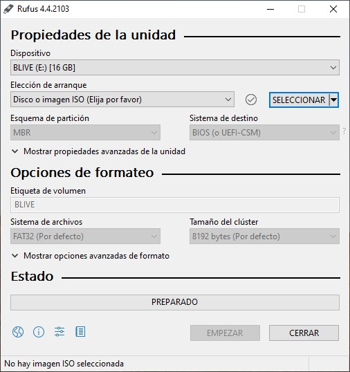Seleccionamos la imagen iso de Ubuntu previamente descargada y damos a empezar sin mover cualquier otra opción.
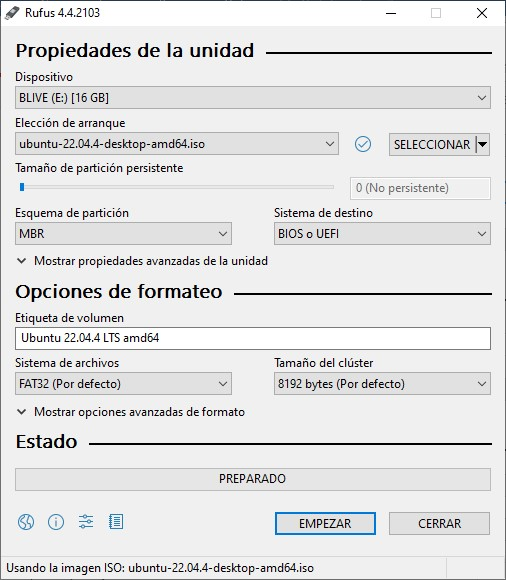Selecionamos instalacion.
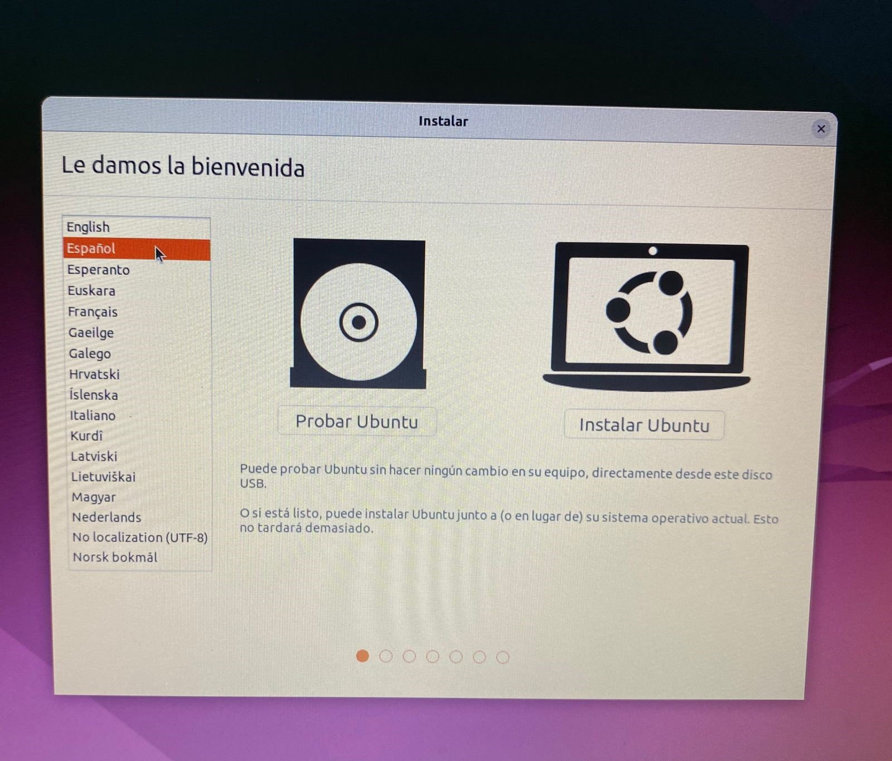Seleccionamos el idioma.

Y en este punto le damos a la opción de instalar junto con Windows y seguimos con la instalación normal.
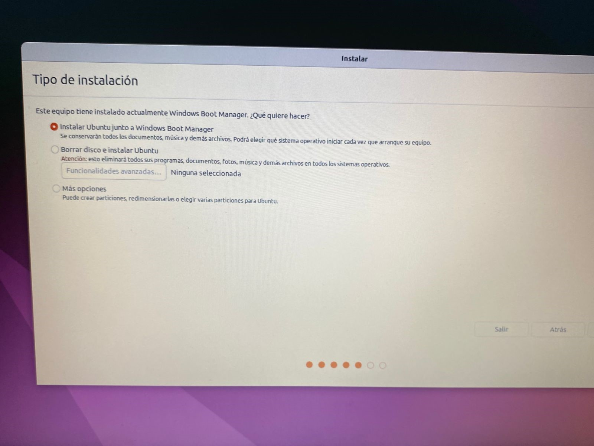Seleccionamos las región de horaria.

Y esperamos a que se instale


Y una vez terminado nos tendrá que aparecer lo siguiente indicando que el binomio se hiso de manera correcta.
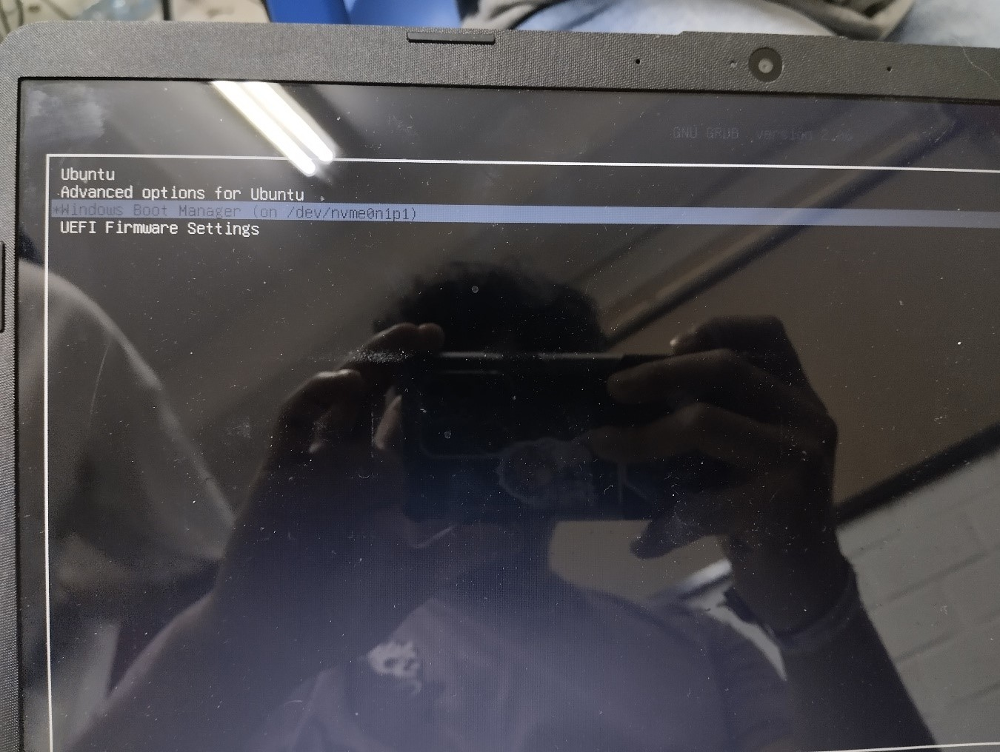CONCLUSION
El usar un binomio con dos o más sistemas operativos nos permite usar las características de dichos sistemas operativos en un mismo dispositivo sin cambiar perder archivos o programas que nos e puedan ejecutar el otro sistema operativo. En lo personal fue un poco mas sencillo ya gracias a la opción que da Ubuntu para hacer la partición automáticamente por lo que no hubo mayor problema con su instalación, aunque si se tiene que tomar en cuenta el almacenamiento en disco a la hora de hacer la partición o pueden haber problemas de rendimiento.
PRACTICA 7
VIRTUALIZACIÓN
ACTIVIDADES:
Utilice la bibliografía sugerida para consulta o los motores de búsqueda en internet y conteste correctamente cada una de los siguientes cuestionamientos y realice las practicas correspondientes. En que consiste la emulación del Hardware y herramientas Proceso para la creación de una máquina virtual Instalación virtual de Linux Instalación virtual Windows y office
Introducción
Una máquina virtual es la forma que tenemos de aprovechar recursos de otros sistemas operativos sin la necesidad de particionar el disco de almacenamiento. Esto se logra gracias a una utilería que nos brinda esta ventaja.
Información
La virtualización crea un entorno informático simulado, o virtual, en lugar de un entorno físico. A menudo, incluye versiones de hardware, sistemas operativos, dispositivos de almacenamiento, etc., generadas por un equipo. Esto permite a las organizaciones particionar un equipo o servidor físico en varias máquinas virtuales. Cada máquina virtual puede interactuar de forma independiente y ejecutar sistemas operativos o aplicaciones diferentes mientras comparten los recursos de una sola máquina host.
Los sistemas operativos se virtualizan en el kernel, es decir, en sus administradores centrales de tareas. Es una forma útil de ejecutar los entornos de Linux y Windows de manera paralela. Las empresas también pueden insertar sistemas operativos virtuales en las computadoras, lo cual:
- Reduce los grandes gastos en sistemas de hardware, ya que las computadoras no requieren funciones tan inmediatas.
- Aumenta la seguridad porque todas las instancias virtuales se pueden supervisar y aislar.
- Limita el tiempo que se destina a los servicios de TI, como las actualizaciones de software.
En este caso se usó VirtualBox, una de las utilerías o herramientas más usadas en virtualización. Gracias a su popularidad, ofrece una amplia disponibilidad de información y un soporte de actualizaciones constante. Esto facilita la identificación y resolución de problemas, agilizando el proceso de uso y mantenimiento de las máquinas virtuales.
Cómo hacer una virtualización usando VirtualBox
Descargamos virtualbox
Iniciamos el instalador
Aceptamos tos los términos y condiciones y damos a finalizar

Abrimos y le damos a crear nueva.
Le damos un nombre a la maquina para identificarla y importamos la imagen iso del sistema a instalar.
Le damos un nombre de usuario y contraseña a la maquina.
Le damos los requisitos necesarios para la instalación, ram, almacenamiento, nucleos lógicos y acepatamos que todo es correcto.

Después solo esperamos a que la maquina se instale como se aria normalmente ya tendiriamos instalado una maquina virtual.

Como paso siguiente instalamos office usando un instalador libre.

Aceptamos los teminos y condiciones.
Seleccionamos instalar ahora
Cerramos y nos aseguramos de que si este instalado.

Proseguimos con la instalación de el antivirus en este caos malwarebytes.
Abrimos el instalador.

Le damos permiso para realizar cambios a el equipo.
Seleccionamos idioma
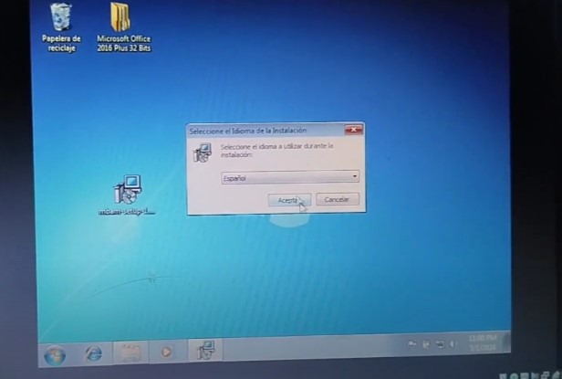Aceptamos los términos y condiciones.

Seleccionamos el lugar de instalación.

Le damos a listo para instalar.
Finalizamos la instalación y nos aseguramos de que este funcionando correctamente.

CONCLUSION
Una máquina virtual nos sirve para poder usar varios tipos de sistemas operativos o probarlos sin la necesidad de hacer múltiples particiones en un disco, simplemente usando los recursos de nuestro pc, asique es muy útil para poder usar características de otros sistemas operativos sin la necesidad de resetear un dispositivo.
Al realizar la actividad me tope con unos cuantos inconvenientes, ya que la maquina usad no es muy potente esta se trabo un poco al momento de la instalación, incluso iba un poco mas lento, también al momento de instalar utilerías como office y un antivirus se trabo bastante, peor se logro solucionar de forma rápida.